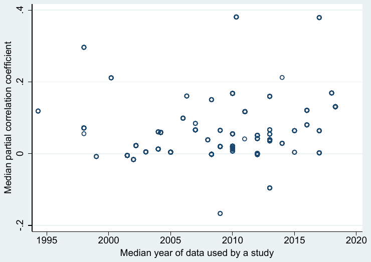
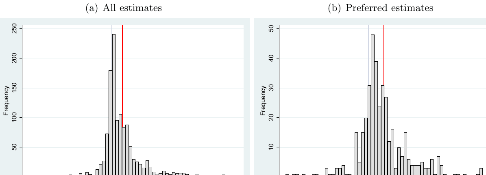
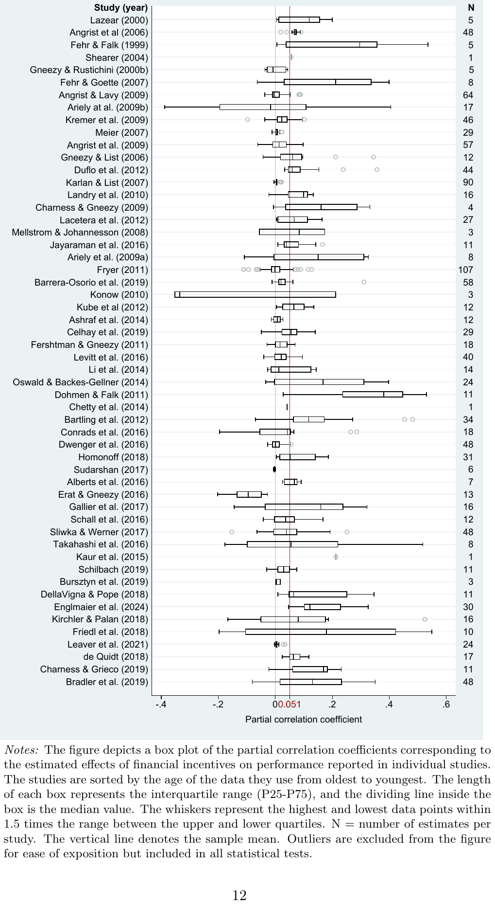
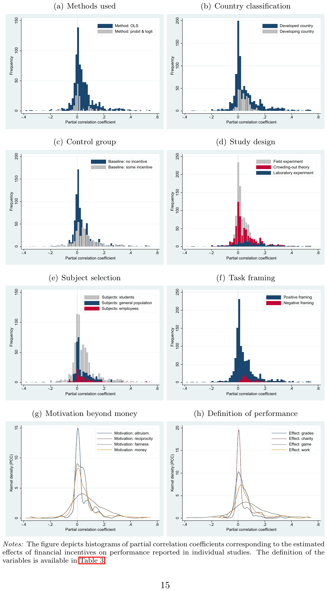
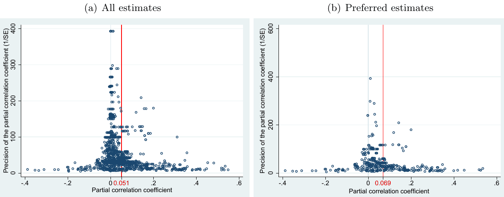
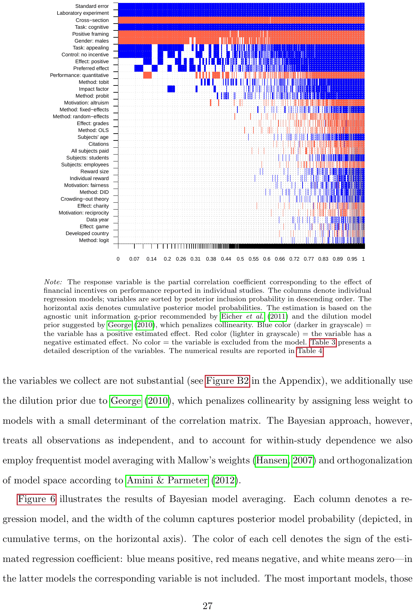

Financial Incentives and Performance: A Meta-Analysis of Experiments in Economics
Petr Cala, Tomas Havranek, Zuzana Irsova, Martina Luskova, Jindrich Matousek, and Jiri Novak (2026), "Financial Incentives and Performance: A Meta-Analysis of Experiments in Economics." Journal of Political Economy Microeconomics. https://doi.org/10.1086/743543
Petr Calaa, Tomas Havraneka,b,c, Zuzana Irsovaa,c, Martina Luskovaa, Jindrich Matouseka, and Jiri Novaka
aCharles University, Prague
bCentre for Economic Policy Research, London
cMeta-Research Innovation Center at Stanford
Journal of Political Economy Microeconomics, forthcoming
Abstract
Economists typically model financial incentives as enhancing performance, whereas psychologists emphasize that incentives can backfire. Experimental findings are mixed. We collect 2,193 estimates from 88 economics experiments and account for 48 contextual factors. Using recent advances in correcting for publication bias and p-hacking, we find that the corrected mean effect of financial incentives on performance is close to zero across most field contexts. Laboratory settings and loss framing yield statistically significant but modest positive effects even after bias correction. Our results suggest that increasing financial rewards rarely produces large performance gains in the experimental settings most studied by economists.
Keywords: Incentives, experiments, meta-analysis, model uncertainty, publication bias
JEL Codes: C90, D91, M52
1. Introduction
At least since 1971, psychologists have pointed out that financial incentives can harm performance by crowding out the enjoyment we might otherwise derive from a task (Deci, 1971). An enjoyable task becomes one we do for the money, and intrinsic motivation is displaced. If the extrinsic motivation provided by financial incentives is not sufficiently strong, monetary rewards can actually reduce performance. While not universally accepted, motivation crowding has become the default incentive model in psychology and related fields. A widely cited meta-analysis by Weibel et al. (2010) finds that financial incentives do, in fact, harm performance on average when tasks are interesting. Economists have long been aware of the psychological theory and evidence (Camerer & Hogarth, 1999; Gneezy & Rustichini, 2000b; Frey & Jegen, 2001; Gneezy et al., 2011; Esteves-Sorenson & Broce, 2022), and several economic models allow for motivation crowding (e.g. Frey & Oberholzer-Gee, 1997; Benabou & Tirole, 2003; Tirole & Benabou, 2006; Sliwka, 2007; Benabou & Tirole, 2011). Still, the following statement, featured prominently on the website of a leading management consultancy, echoes a view that remains influential among economists and practitioners:
Generous and specific financial incentives can help drive and sustain a rapid performance improvement. (McKinsey, 2022)
We show that the experimental evidence in economics does not support this view unconditionally. Our contribution is threefold. First, we correct the literature for publication bias, which can inflate the underlying effect size multiplicatively (Bruns & Ioannidis, 2016; Ioannidis et al., 2017; Brodeur et al., 2020; Neisser, 2021; Stanley et al., 2022).1 Second, we allow for model uncertainty (Eicher et al., 2011; Amini & Parmeter, 2012; Feldkircher & Zeugner, 2012; Steel, 2020), which is particularly important given the heterogeneity of the literature. Third, we focus on experimental economics. Existing meta-analyses have concentrated primarily or exclusively on psychology; the one with the largest share of economics evidence is Weibel et al. (2010), in which only 11 out of 46 studies are drawn from economics. The economics literature thus remains largely unexplored, even though several researchers have emphasized the vast differences in priors and methodological approaches between economics and psychology when it comes to the effect of money on behavior (Camerer & Hogarth, 1999; Hertwig & Ortmann, 2001; Esteves-Sorenson & Broce, 2022).

Notes: The vertical axis shows the median partial correlation coefficient corresponding to the estimated effect of financial incentives on performance reported in individual studies. The horizontal axis shows the median year of the data used in the studies.
Figure 1 presents a bird's-eye view of the experimental economics literature measuring the effect of financial incentives on performance. The median estimates from each study, recomputed as partial correlations for comparability, typically range between 0 and 0.2, though some studies report values as low as −0.2 or as high as 0.4. After correcting for publication bias and accounting for model uncertainty, we find that the average effect is close to zero across most experimental contexts. The main exceptions are laboratory experiments and experiments with negative framing, which yield a mean partial correlation of 0.07, with a 95% confidence interval of (0.01, 0.14). This estimate lies on the threshold between a negligible and small effect according to the guidelines by Doucouliagos (2011). However, laboratory experiments on this topic are relatively rare in economics, comprising only 19% of the estimates. The dominance of field experiments in our data, along with the correction for publication bias, help explain why a recent meta-analysis in psychology (Kim et al., 2022) instead finds a positive mean effect of financial incentives on performance: their analysis relies heavily on laboratory experiments, which account for 83% of the estimates and dominate the psychology literature. Only three studies overlap between our meta-analysis and that of Kim et al. (2022).
Two streams of research are closely related to our analysis. The first concerns modern meta-analyses in experimental economics. Imai et al. (2021) present a meticulous meta-analysis of present bias, Brown et al. (2024) examine loss aversion, and Matousek et al. (2022) focus on individual discount rates. These studies highlight the role of publication bias in experimental economics, as well as systematic variation in results based on experimental design.2 The second stream relates to meta-analyses in psychology. Most psychological research in this area focuses not on performance but on intrinsic motivation: specifically, whether financial incentives crowd it out. Relevant meta-analyses include Wiersma (1992); Cameron & Pierce (1994); Deci et al. (1999); Cameron (2001); Cerasoli et al. (2014). Their results are mixed, but the Deci et al. (1999) study, which finds evidence of crowding out, is by far the most frequently cited. As for the overall effect of financial incentives on performance, relevant meta-analyses include Jenkins et al. (1998); Condly et al. (2003); Weibel et al. (2010); Garbers & Konradt (2014); Kim et al. (2022). Again, the findings are mixed, but Weibel et al. (2010), who report a negative effect, remain the most frequently cited in the literature. Notably, none of the psychology meta-analyses correct for publication bias.
Publication bias arises when some results, typically those that are intuitive and statistically significant, are preferentially selected for publication. Such selective reporting can work at the level of entire studies: for example, studies may end up unpublished, forever hidden in a file drawer, because of their insignificant results. More plausibly, however, selective reporting works as a form of voluntary self-censorship practiced by the authors themselves (Brodeur et al., 2023). In the context of the incentive-performance literature, researchers can, for example, alter the measure of performance they report (Esteves-Sorenson & Broce, 2022) or choose a subset of the data until they get a desired outcome. Selective reporting does not equal cheating and can be completely unintentional. McCloskey & Ziliak (2019) draw a useful analogy between selective reporting in empirical research and the Lombard effect in psychoacoustics: speakers involuntarily increase their vocal effort in response to noise. In a similar way, researchers may increase their effort to find a plausible estimate when there is noise in the data. Consequently, publication bias is consistent with a correlation between reported estimates and their standard errors. In other words, studies with a large standard error will need a large point estimate to overcome noise and produce a statistically significant result.
Our initial identification assumptions are based on the Lombard effect: i) there is no correlation between estimates and standard errors in the absence of publication bias, and ii) publication bias is a linear function of the standard error. (We will relax both assumptions later.) Then a regression of estimates on their standard errors identifies both the extent of publication bias (the slope) and the mean estimate corrected for publication bias (the intercept). This “meta-regression”, with appropriate weights and controls, yields a robustly positive estimated slope and an estimated intercept in the vicinity of zero. The result is consistent with publication bias in favor of positive reported effects of financial incentives on performance: a plausible prior of many researchers in economics. (It is telling that only half of the studies in our sample mention motivation crowding theory.) The result also implies that, in the experimental economics literature, the mean effect of financial incentives on performance is negligible.
The two assumptions mentioned above are commonly used in economics meta-analyses, but they are too strong for many contexts. Stanley & Doucouliagos (2014) and Andrews & Kasy (2019) show that publication bias is most likely a nonlinear function of the standard error. For this reason we employ a battery of recently developed nonlinear tests (Ioannidis et al., 2017; Andrews & Kasy, 2019; Bom & Rachinger, 2019; Furukawa, 2020), which all corroborate our previous findings regarding publication bias and the mean underlying effect. The uncorrelation assumption is more difficult to tackle. Havranek et al. (2024) show that, in economics, estimates can in principle be related to standard errors even in the absence of publication bias. For example, some method choices can systematically affect both quantities.
A solution is to use the inverse of the square root of the number of degrees of freedom as an instrument for the standard error (Irsova et al., 2025). Such an instrument is correlated with the standard error by the definition of the latter and can be expected to be less related to method choices. Another solution is the p-uniform* technique developed by van Aert & van Assen (2025). The technique uses the statistical principle that the distribution of p-values should be uniform at the underlying mean effect size. Using both techniques we obtain a negligible mean effect after correction for publication bias. In addition, we use the tests of Gerber & Malhotra (2008) and Elliott et al. (2022), which also do not rely on the uncorrelation assumption and both corroborate publication bias.
A related limitation, which can be viewed as another form of publication bias, arises already at the stage of study design. Researchers rarely conduct experiments in contexts where incentives are expected to have large and obvious effects (for example, comparing one dollar to one thousand dollars for a routine task) because such results are considered trivial. Instead, experimental designs often focus on boundary cases where incentives might backfire or interact with other motives, precisely because such findings are more interesting to publish. This design-stage selection narrows the scope of the available evidence and cannot be corrected in a meta-analysis. The issue is closely connected to external validity: results from short-run, modest-stake interventions in experimental settings may not map directly to high-powered, long-term incentives in labor markets or organizations. Our findings should therefore be interpreted as evidence on the experimental margin that economists have chosen to investigate, rather than as a universal claim about incentives in all real-world contexts.
The economics experiments measuring the effect of financial incentives on performance vary so much that a reader will ask how a mean estimate is informative regarding the field as a whole. Individual researchers focus on very different definitions of performance: school grades, blood donations, games, work outcomes, and others. The task itself can be appealing or unappealing, cognitive or manual. Outputs can be measured quantitatively or qualitatively. Reward size and framing differ across experiments, sometimes only individual people are paid, sometimes the rewards are group-specific. Some experiments are conducted in a lab, many are field studies. Subjects differ in terms of gender, occupation, age, and culture. Various econometric techniques are used to produce the main results. To allow for these many differences in the context in which the reported estimates were obtained, we employ Bayesian model averaging, which is the natural solution to model uncertainty in the Bayesian framework (Steel, 2020). To address collinearity in such an exercise we use the dilution prior (George, 2010). As a robustness check we use frequentist model averaging with Mallow's weights (Hansen, 2007) and orthogonalization of model space following the approach of Amini & Parmeter (2012).
The results of model averaging suggest that some method choices drive the results systematically. For example, negative framing of incentives typically leads to larger reported effects of incentives, which is consistent with loss aversion. But these differences are surprisingly small. The implied effects for various experimental contexts after correction for publication bias and accounting for model uncertainty are always statistically insignificant and negligible according to the guidelines of Doucouliagos (2011) for interpreting partial correlations in economics. The only exceptions, as we have mentioned, are laboratory experiments and framing as a loss. We conclude that the experimental economics literature studied to date and taken as a whole does not provide evidence of large unconditional effects of financial incentives on performance.
Our results do not fit neatly in the mainstream psychology framework either. The motivation crowding theory assumes that the crowding out of intrinsic motivation happens only in the case of interesting tasks, exactly as reported by Weibel et al. (2010). When the task is fundamentally unappealing, intrinsic motivation is negligible, and there should be no crowding out. A potential explanation is that reward cues distract people from the task itself. A recent meta-analysis in psychology shows that this effect can be important (Rusz et al., 2020): people focus on the rewards instead of the work. The distraction effect can be present for both interesting and uninteresting tasks and is more likely in field settings, where the experimenters do not always have full control over the connection between reward cues and the task itself. The distraction effect can thus be associated with our finding that lab experiments tend to yield more evidence for the effect of financial incentives on performance. Finally, it is possible that the experiments suffer from measurement error, which results in attenuation. Esteves-Sorenson & Broce (2022) survey 82 papers on related questions and highlight the variance in the different and sometimes inconsistent metrics used in these studies.3
2. Data and Experimental Context
The experimental designs included in our meta-analysis are diverse, both in task characteristics and contextual settings. This diversity reflects the broader literature on the complex relationship between incentives and motivation, where economic and psychological theories often predict context-dependent and sometimes counterintuitive effects (Bowles & Polania-Reyes, 2012). Typical tasks include cognitive activities such as problem-solving (e.g., multiplying numbers, Dohmen & Falk, 2011), memory challenges (e.g., recalling digit sequences, Ariely et al., 2009b), and decision-making under uncertainty (e.g., trust games, Fehr & List, 2004). Manual tasks include physical assembly, as in Lazear (2000). These tasks are assessed using both quantitative measures, such as speed, accuracy, or monetary output, and qualitative outcomes, such as creativity (Charness & Grieco, 2019) or performance in incentive-driven educational settings (Angrist et al., 2009).
One illustrative example of a memory task comes from Ariely et al. (2009b), where participants were asked to recall the last three digits of sequences read aloud. Financial incentives varied across conditions, with higher stakes sometimes leading to worse performance: a finding interpreted as evidence of choking under pressure. This design allows researchers to assess how extrinsic motivation affects cognitive performance in high-stress settings. Another example is provided by Dohmen & Falk (2011), who asked participants to solve multiplication problems involving one-digit and two-digit numbers under fixed and performance-based payment schemes.
Studies of decision-making under uncertainty often rely on social dilemma games. Fehr & List (2004) employ variants of the trust games involving CEOs, where trusting or trustworthy behavior enhances joint payoffs, but monetary incentives may discourage such behavior. Their subject pool notably includes C-level executives. Manual tasks feature in field studies like Lazear (2000), who tracked the productivity of factory workers assembling windshields as they moved from fixed wages to piece-rate contracts.
This variability extends beyond task type to include reward schemes, subject pools, and motivational framing. Incentives range from nominal payments to substantial rewards, framed as bonuses for success or penalties for poor performance. Most laboratory studies use student participants, but field studies often involve employees or the general population, adding demographic diversity to the evidence base.
To build our dataset, first we search for studies that provide experimental evidence regarding the effect of financial incentives on performance. We use Google Scholar because of its powerful fulltext search; the details of our baseline strategy, including the specific search query, are presented in Figure A1 in the Appendix. As we have noted, we only focus on economics journals and also only consider studies written in English. In addition, to be included in the meta-analysis each study must report standard errors or any other statistics from which standard errors can be computed (typically t-statistics or p-values). Standard errors are needed as weights in many meta-analysis techniques and also as regressors in meta-regression models of publication bias. Each included study has to report the number of degrees of freedom available for the estimation of the incentive-performance effect; information on the degrees of freedom is needed in order to recompute the effects into a common standardized metric. Fifty-four studies satisfy our inclusion criteria; we will call them primary studies.
The basic statistics that we collect from the primary studies are the point estimate of the incentive-performance effect, the corresponding standard error, and the number of degrees of freedom used in the estimation. Because the measures of performance used in primary studies vary widely, the point estimates cannot be compared directly. We thus recompute them to partial correlation coefficients (PCCs) according to the following formula:
where stands for the t-statistic of the reported coefficient and indicates the number of degrees of freedom in the estimation. Using the computed partial correlation and the original t-statistic we then obtain the corresponding standard error of the standardized measure (Stanley & Doucouliagos, 2012).
For robustness checks, we consider two additional datasets. First, instead of correlations we look at Cohen's d, a measure of mean difference between the treatment and control groups divided by the pooled standard deviation. We also complement our baseline keyword search with “snowballing,” in which we inspect the studies not identified by the Google Scholar search but frequently cited by the studies that were identified. The details of our approach are available in Figure A2; we are able to include 69 studies, which we call the expanded dataset. Second, we collect data from working papers, as explained in Figure A3. We exclude working papers from the baseline dataset because they are not peer-reviewed, are more prone to contain typos, and their classification into economics or psychology is sometimes unclear. The classification is clearer for journals, where we consider all journals listed in RePEc as primarily economics outlets, and all of the journals in our sample are also listed in the economics category in the Web of Science. As we have noted in the Introduction, our definition of publication bias is broad and also includes p-hacking and self-censoring on the side of the authors themselves. Indeed, Brodeur et al. (2023) show that editorial decisions are more likely to alleviate than strengthen publication bias. We find 19 working papers that we can include. In total, in this meta-analysis we consider 88 studies shown in Table A1.

Notes: The figure depicts a histogram of the partial correlation coefficients corresponding to the estimated effects of financial incentives on performance reported in individual studies. Preferred estimates are those emphasized by the authors of individual studies. The vertical line denotes the sample mean. Outliers are excluded from the figure for ease of exposition but included in all statistical tests.
Most primary studies report many estimates of the incentive-performance effect. Typically these different estimates reflect different subsets of the subject pool, but sometimes there are also within-study differences in reward size, framing, estimation technique, and other aspects; more details are available in the Appendix. In total, we obtain 1,252 estimates for the baseline dataset, 1,785 for the expanded dataset, and 408 estimates for working papers. We winsorize the effects at the 1% level to limit the influence of outliers. (Table B6 and Table B7 in the Appendix show our main results without winsorizing.) To account for the context in which the estimates were obtained we collect 48 aspects of the data, experimental approach, and resulting publication. This means that we had to fill more than 100,000 data points by hand after reading the primary studies. Three of the co-authors collected 1/3 of the data each; another co-author randomly checked 1/3 of the entire dataset. The discovered inconsistencies in coding were discussed among the co-authors and corrected for the entire dataset. The final dataset, together with the code used in the meta-analysis, is available in an online appendix at meta-analysis.cz/incentives.
The literature on financial incentives and performance often involves study-specific or even estimate-specific choices that are difficult to capture using moderator variables in the conventional meta-analysis sense. Moreover, the original authors sometimes acknowledge certain estimates as being flawed. To address these issues, we distinguish between two groups of estimates: (i) those the authors themselves appear to favor, and (ii) all others. This classification serves as a proxy for methodological and data quality considerations that are otherwise challenging to formalize. Our approach follows the spirit of Lang (2025) and Opatrny et al. (2025), relying primarily on which results are emphasized in key sections of the paper: the abstract, introduction, or conclusion. In some cases, authors explicitly identify a main or baseline estimate by contrasting it with robustness checks. Often, studies contain multiple favored estimates, for example across subgroups or treatment variants. For each estimate classified as preferred, we document the justification in the dataset at meta-analysis.cz/incentives. This procedure yields 396 preferred and 856 non-preferred estimates for the baseline dataset.
Figure 2 shows the distribution of the estimates in our dataset. Estimates close to zero are common, and the mean partial correlation is 0.051: a negligible effect according to the Doucouliagos (2011) guidelines for interpreting partial correlations.4 The distribution is similar for preferred estimates, with a slightly larger mean of 0.069. The right-hand portion of the distribution is heavier than the left-hand portion, which might indicate publication bias in favor of positive estimates—but it may also simply indicate heterogeneity in the underlying effects. Few estimates exceed 0.33, a threshold denoting large estimates in the guidelines. Figure 3 shows the box plot of the estimates reported in individual studies. (Figure B1 in the Appendix shows the box plot for individual countries, where we observe no systematic differences.) The studies are sorted by the age of the data they use: given the long and variable publication lags in economics, the year of data is more informative than the year of publication. Three stylized facts emerge from the figure. First, most studies report both positive and negative estimates of the incentive-performance effect. Second, the mean reported effect tends to be quite close to zero for most of the older studies. Third, the mean reported effects seem to be positive and non-negligible for the more recent studies. These studies are often conducted in a lab and measure performance in games.

Notes: The figure depicts a box plot of the partial correlation coefficients corresponding to the estimated effects of financial incentives on performance reported in individual studies. The studies are sorted by the age of the data they use from oldest to youngest. The length of each box represents the interquartile range (P25-P75), and the dividing line inside the box is the median value. The whiskers represent the highest and lowest data points within 1.5 times the range between the upper and lower quartiles. N = number of estimates per study. The vertical line denotes the sample mean. Outliers are excluded from the figure for ease of exposition but included in all statistical tests.
Table 1 shows summary statistics for selected subsets of the data. The first part of the table presents unweighted statistics, in which each estimate has the same weight. The second part shows statistics weighted by the inverse of the number of estimates reported per study, which means that here each study has the same weight. The main takeaway from the table is that estimates of the incentive-performance effect are small irrespective of context; different weights do not change the conclusion, and any systematic differences seem to be small. Figure 4 documents the lack of large systematic differences visually. The definition of the categories used in Table 1 and Figure 4 is available in Table 3 in the section on heterogeneity. Here we just briefly discuss the main differences in estimation contexts. A key difference is the definition of performance: only a small minority of studies focus on work outcomes, and the literature is dominated by performance measured in school grades, games, and prosocial behavior (for example, blood donations). While the mean effect is small for all the categories, it is smaller for grades and prosocial behavior than for game and work outcomes. Regarding the nature of the task, the effect seems to be somewhat larger for appealing, manual, and quantitative than for unappealing, cognitive, and qualitative tasks, but the differences are small.
Concerning the reward scheme, large rewards are not correlated with increased performance in our dataset. It does not seem to matter much whether the framing of the experiment is positive (gain) or negative (loss), whether subjects get a show-up fee, and whether rewards are paid to individuals or to groups. The primary studies also differ in terms of the underlying motivation they provide beyond money. Some of the tasks are meaningless beyond the financial incentive (for example, counting dots on a screen), while other tasks involve aspects of altruism, reciprocity, and fairness. The mean effect is similar to the overall mean when money is the sole motivation (0.052 vs. 0.051). The effect seems to be larger for reciprocity, but here we only have 130 observations. Concerning the general design of the experiment, lab studies tend to report larger estimates than field studies. Studies that explicitly mention the motivation crowding theory report estimates similar to the overall mean (0.060 vs. 0.051). The composition of the subject pool also does not seem to matter much, and the same applies for the estimation technique—here some subsets display means above 0.1, but for these subsets we have very few observations. Table 1, however, ignores publication bias, which can distort the reported findings substantively (Ioannidis et al., 2017).
| No. of observations | Unweighted | Weighted | |||||
|---|---|---|---|---|---|---|---|
| Mean | 95% conf. int. | Mean | 95% conf. int. | ||||
| All estimates | 1,252 | 0.051 | 0.046 | 0.056 | 0.070 | 0.063 | 0.077 |
| Preferred estimates | 396 | 0.069 | 0.057 | 0.080 | 0.084 | 0.071 | 0.098 |
| Non-preferred estimates | 856 | 0.043 | 0.037 | 0.048 | 0.056 | 0.049 | 0.063 |
| Definition of performance effect | |||||||
| Effect: grades | 497 | 0.030 | 0.025 | 0.036 | 0.041 | 0.035 | 0.048 |
| Effect: charity | 283 | 0.034 | 0.026 | 0.042 | 0.052 | 0.042 | 0.063 |
| Effect: game | 279 | 0.095 | 0.079 | 0.112 | 0.091 | 0.071 | 0.111 |
| Effect: work | 193 | 0.065 | 0.049 | 0.080 | 0.081 | 0.065 | 0.098 |
| Nature of the task | |||||||
| Task: appealing | 547 | 0.068 | 0.058 | 0.078 | 0.077 | 0.065 | 0.089 |
| Task: unappealing | 705 | 0.038 | 0.032 | 0.043 | 0.062 | 0.055 | 0.069 |
| Task: cognitive | 959 | 0.044 | 0.038 | 0.050 | 0.063 | 0.055 | 0.071 |
| Task: manual | 293 | 0.072 | 0.060 | 0.085 | 0.078 | 0.065 | 0.091 |
| Performance: quantitative | 1,010 | 0.057 | 0.051 | 0.063 | 0.079 | 0.072 | 0.087 |
| Performance: qualitative | 242 | 0.025 | 0.016 | 0.034 | 0.021 | 0.007 | 0.035 |
| Reward scheme | |||||||
| Reward size ≥ 0.5 | 590 | 0.037 | 0.031 | 0.044 | 0.051 | 0.043 | 0.058 |
| Reward size < 0.5 | 662 | 0.063 | 0.055 | 0.071 | 0.081 | 0.071 | 0.092 |
| Positive framing | 1,141 | 0.048 | 0.042 | 0.054 | 0.066 | 0.059 | 0.073 |
| Negative framing | 111 | 0.079 | 0.066 | 0.093 | 0.104 | 0.088 | 0.119 |
| All subjects paid | 708 | 0.060 | 0.052 | 0.068 | 0.085 | 0.075 | 0.095 |
| Individual reward | 1,049 | 0.055 | 0.049 | 0.062 | 0.073 | 0.065 | 0.080 |
| Group reward | 207 | 0.030 | 0.020 | 0.040 | 0.057 | 0.042 | 0.073 |
| Control: no incentive | 824 | 0.040 | 0.034 | 0.045 | 0.049 | 0.043 | 0.055 |
| Control: some incentive | 428 | 0.073 | 0.061 | 0.084 | 0.092 | 0.078 | 0.105 |
| Motivation beyond money | |||||||
| Motivation: altruism | 270 | 0.036 | 0.027 | 0.045 | 0.045 | 0.032 | 0.057 |
| Motivation: reciprocity | 130 | 0.084 | 0.065 | 0.103 | 0.074 | 0.056 | 0.092 |
| Motivation: fairness | 118 | 0.041 | 0.032 | 0.050 | 0.037 | 0.028 | 0.045 |
| Motivation: money only | 734 | 0.052 | 0.044 | 0.060 | 0.085 | 0.076 | 0.095 |
| Study design | |||||||
| Laboratory experiment | 242 | 0.106 | 0.087 | 0.125 | 0.113 | 0.090 | 0.136 |
| Field experiment | 1,010 | 0.038 | 0.033 | 0.042 | 0.055 | 0.050 | 0.061 |
| Crowding-out theory | 706 | 0.060 | 0.052 | 0.068 | 0.065 | 0.056 | 0.075 |
| Structural variation | |||||||
| Population: students | 777 | 0.053 | 0.046 | 0.060 | 0.077 | 0.067 | 0.086 |
| Population: employees | 127 | 0.064 | 0.045 | 0.082 | 0.076 | 0.058 | 0.094 |
| Population: general | 348 | 0.042 | 0.034 | 0.049 | 0.047 | 0.038 | 0.056 |
| More than 50% males | 356 | 0.033 | 0.024 | 0.041 | 0.051 | 0.041 | 0.062 |
| Gender equity | 576 | 0.052 | 0.043 | 0.061 | 0.077 | 0.065 | 0.089 |
| Less than 50% males | 320 | 0.069 | 0.060 | 0.079 | 0.082 | 0.070 | 0.093 |
| Developed country | 932 | 0.055 | 0.048 | 0.062 | 0.080 | 0.071 | 0.088 |
| Developing country | 320 | 0.040 | 0.033 | 0.047 | 0.042 | 0.034 | 0.050 |
| Estimation technique | |||||||
| Method: OLS | 805 | 0.048 | 0.042 | 0.055 | 0.065 | 0.056 | 0.073 |
| Method: logit | 68 | 0.007 | −0.002 | 0.015 | 0.029 | 0.012 | 0.045 |
| Method: probit | 94 | 0.065 | 0.036 | 0.094 | 0.116 | 0.077 | 0.155 |
| Method: tobit | 40 | 0.118 | 0.075 | 0.161 | 0.144 | 0.093 | 0.196 |
| Method: fixed-effects | 57 | 0.074 | 0.047 | 0.101 | 0.076 | 0.048 | 0.105 |
| Method: random-effects | 39 | 0.044 | 0.013 | 0.075 | 0.054 | 0.018 | 0.089 |
| Method: DID | 45 | 0.069 | 0.052 | 0.086 | 0.064 | 0.049 | 0.078 |
| Method: other | 104 | 0.045 | 0.032 | 0.058 | 0.045 | 0.033 | 0.058 |
Notes: The table summarizes partial correlation coefficients corresponding to the estimated effects of financial incentives on performance reported in individual studies. The definition of the variables is available in Table 3. Weighted = estimates are weighted by the inverse of the number of estimates reported per study so that each study has the same weight in the resulting mean.

Notes: The figure depicts histograms of partial correlation coefficients corresponding to the estimated effects of financial incentives on performance reported in individual studies. The definition of the variables is available in Table 3. test of the Andrews-Kasy model, shown in Table B10 in the Appendix, suggests that in our case estimates are indeed correlated with standard errors even in the absence of publication bias, we prefer the MAIVE approach (available also as a web app at easymeta.org). MAIVE suggests strong publication bias and negligible mean effect beyond the bias.
Finally, we use the p-uniform* technique recently developed in psychology (van Aert & van Assen, 2025), which is a nonlinear model based on the statistical principle that p-values should be uniformly distributed at the mean underlying effect size. The technique does not need the uncorrelation assumption for identification but uses inverse-variance weights that might still be problematic if potential p-hacking works via the reported standard error. The technique also works with mean estimates for each study, resulting in a loss of power. Once again we obtain evidence for publication bias, though the mean estimated incentive-performance effect is larger than in the previous cases.
In the Appendix we provide several robustness checks. First, we use tests of publication bias and p-hacking that focus on the distribution of t-statistics and p-values (Table B1). We find evidence of selection, especially related to the sign of the resulting estimate. Second, we analyze the expanded dataset, which is based on Cohen's d (Table B4). Here, evidence is even stronger for publication bias, and the corrected mean effect is close to zero. Third, we run the publication bias tests on the raw, non-winsorized dataset. For the baseline dataset (Table B6), we lose statistical significance in some specifications, but most of them are consistent with the baseline case, with our preferred MAIVE model giving almost identical results. For the expanded dataset (Table B7), analysis of non-winsorized data reveals evidence of publication bias in all models except for p-uniform*, where the corresponding p-value is 0.13.
Fourth, we account for potential interdependence of reported estimates (Table B8). Our results do not change substantially if we consider just one estimate per study or one estimate per experiment. (There can be more than one experiment conducted within one study.) In a similar vein, focusing on estimates emphasized by the authors of the primary studies (Panel C of Table B8) also yields substantial publication bias and a small corrected mean effect. Finally, we find less evidence for bias among working papers (Table B9). This finding is consistent with publication bias in the traditional sense, in which editors or referees prefer certain results—in contrast to p-hacking. But note that our sample of working papers is small, resulting in low statistical power; moreover, five techniques still find evidence of bias.
3. Publication Bias
As Camerer & Hogarth (1999, p. 7) put it, "the predicted effect of financial incentives on human behavior is a sharp theoretical dividing line between economics and other social sciences, particularly psychology." It is perhaps a case in point that the motivation crowding theory, mentioned prominently in just about every psychology experiment on the topic, has been noted by only 27 of the 54 economics studies we collect for our baseline analysis. If researchers expect that positive, statistically significant results are natural, they can treat negative or insignificant results with suspicion. They may choose not to write papers based on such results, not to publish such papers, or to (intentionally or not) adjust their methodology or dataset in order to produce the intuitive outcome. The resulting distortion of the research record is called publication bias. As documented by the many references we provide in the Introduction, publication bias is widespread across economics and related disciplines.
A further type of publication bias likely works in the opposite direction to the one we formally test. Conventional publication bias inflates effect sizes by favoring statistically significant or positive estimates. But as we have noted in the Introduction, a more subtle distortion arises at the stage of study design: researchers may avoid running experiments in contexts where incentives are expected to have a large and obvious effect. Instead, experimental papers are often designed to uncover "interesting" or counterintuitive effects. This selective focus narrows the empirical lens of the literature to edge cases where incentives are less likely to work or where multiple motivations interact. Unlike conventional publication bias, this form of design-stage selection cannot be detected or corrected in a meta-analysis, because the distribution of omitted contexts is hard to model. As such, our findings should be interpreted as describing the effects of financial incentives within the kinds of contexts that researchers have chosen to study experimentally.
A basic visual tool used for the detection of publication bias is the so-called funnel plot. It is a scatter plot of point estimates on the horizontal axis against the estimates' precision (the inverse of the standard error) on the vertical axis. In the absence of publication bias, small-sample effects, and systematic heterogeneity, the most precise estimates should be close to the mean underlying effect. With decreasing precision, estimates get more dispersed around the mean; consequently, the scatter plot will attain the shape of an inverted funnel. If some negative estimates are discarded (unpublished, unrecorded, or re-estimated), the funnel plot will no longer be symmetrical around the mean. The symmetry of the funnel plot thus serves as a basic test of publication bias. Figure 5 shows that, in the case of the incentive-performance literature, the scatter plot indeed resembles the theoretically predicted inverted funnel, and that the funnel is asymmetrical: the right-hand part is heavier, though the asymmetry is not particularly strong. We can also see from the funnel that the most precise estimates are close to zero, but that there is also substantial heterogeneity.

Notes: The figure shows partial correlation coefficients corresponding to the estimated effects of financial incentives on performance reported in individual studies. Preferred estimates are those emphasized by the authors of individual studies. The vertical line denotes the sample mean. In the absence of publication bias, the funnel should be symmetrical around the most precise estimates, and the mean should align with those most precise estimates.
In Panel A of Table 2 we test the asymmetry of the funnel plot by regressing estimates on their standard errors (Egger et al., 1997; Stanley, 2005). If publication bias is a linear function of the standard error and if there is no correlation between estimates and standard errors in the absence of publication bias, then the slope coefficient in the "meta-regression" identifies the degree of publication bias and the constant determines the mean incentive-performance effect corrected for the bias. The linearity assumption is motivated by the Lombard effect mentioned in the Introduction: with increasing noise (that is, the standard error) researchers increase their effort (to produce larger estimates) so that they obtain a statistically significant result. Because statistical significance, measured by the t-statistic, is given by the ratio of the estimates to its standard error, there is hope that selection effort will increase proportionally with the standard error in order to achieve the same t-statistic. The uncorrelation assumption is motivated by the fact that the ratio of estimates and standard errors is assumed to have a symmetrical distribution, which means that estimates and standard errors are statistically independent quantities: a property implied by most empirical techniques. In economics practice, however, both assumptions can easily be violated, and we will address these violations later.
| Panel A: Linear techniques | OLS | FE | BE | Study | Precision |
|---|---|---|---|---|---|
| Publication bias | 0.854*** | 0.315 | 0.628** | 0.596** | 1.337*** |
| (Standard error) | (0.255) | (0.423) | (0.268) | (0.283) | (0.329) |
| Effect beyond bias | 0.0195** | 0.0393** | 0.0383** | 0.0400*** | 0.00733 |
| (Constant) | (0.00970) | (0.0156) | (0.0167) | (0.0115) | (0.00640) |
| Observations | 1,252 | 1,252 | 1,252 | 1,252 | 1,252 |
| Panel B: Nonlinear techniques | Top10 | WAAP | Stem | AK | Kink |
| Publication bias | P = 0.309 | 1.330*** | |||
| (0.0623) | (0.141) | ||||
| Effect beyond bias | 0.0123*** | 0.0105*** | 0.0393 | 0.00143 | 0.00718*** |
| (0.00282) | (0.00247) | (0.0253) | (0.00113) | (0.00163) | |
| Observations | 1,252 | 1,252 | 1,252 | 1,252 | 1,252 |
| Panel C: Endogeneity-robust techniques | MAIVE | p-uniform* | |||
| Publication bias | 0.892*** | L = 187.3 | |||
| (0.273) | (p = 0.001) | ||||
| {0.378, 1.407} | |||||
| Effect beyond bias | 0.0181 | 0.0675*** | |||
| (0.00996) | (0.00306) | ||||
| First-stage robust F-stat | 4,180 | ||||
| Observations | 1,252 | 1,252 |
Notes: Panel A: Results of regression , where denotes the partial correlation coefficient of the -th estimate from the -th study and denotes its standard error. The standard errors of the regression parameters are clustered at the study level and shown in parentheses. OLS = ordinary least squares, FE = study fixed effects, BE = study between effects, Study = weighted by the inverse of the number of estimates reported per study, Precision = weighted by the inverse of the estimate's standard error. Panel B: WAAP = weighted average of adequately powered estimates (Ioannidis et al., 2017). Top10 = the method due to Stanley et al. (2010) focusing on the most precise estimates. Stem = the stem-based method due to Furukawa (2020). Kink model = the endogenous kink method due to Bom & Rachinger (2019). AK = the selection model due to Andrews & Kasy (2019), where P denotes the probability that estimates insignificant at the 5% level are published relative to the probability that significant estimates are published (the latter normalized at 1). Panel C: MAIVE = a linear version of the meta-analysis instrumental variable estimator due to Irsova et al. (2025), in which we use the inverse of the square root of the number of observations as an instrument for the standard error. In curly brackets we show the Anderson-Rubin 95% confidence interval. P-uniform* = the method by van Aert & van Assen (2025), where L denotes the statistic of the publication bias test; the corresponding p-value is in parenthesis (null hypothesis: no bias). *** and ** denote statistical significance at the 1% and 5% level.
The first column in Panel A of Table 2 is a simple OLS regression with standard errors clustered at the study level. In the second column we add study-level fixed effects to account for unobserved study-level heterogeneity. In the third column we use study-level between effects, using the mean estimate and standard error from each study. In the fourth column we use weights equal to the inverse of the number of estimates reported per study; this way, similarly to the between-effect estimation, we give each study the same weight. In the last column we use classical meta-analysis weights based on inverse variance—here more precise estimates get more weight, and the specification explicitly addresses the heteroskedasticity inherent in regressing estimates on a measure of their variance. Four out of the five linear techniques find significant publication bias, and the mean corrected effect is around 0.03, compared to the uncorrected mean of 0.051 discussed in the previous section.
The linearity assumption is unlikely to hold in general, as shown by Stanley & Doucouliagos (2014) and Andrews & Kasy (2019). In practice, thresholds for t-statistics (such as 1.96) are important for researchers. If the standard error increases but the t-statistic is safely above 1.96, the researcher has no incentive for more intensive specification search, and therefore here the connection between publication bias and the standard error disappears. The linearity assumption can be expected to hold only in the immediate vicinity of 1.96 or other important thresholds. In Panel B of Table 2 we use five techniques that allow for a nonlinear relationship between the standard error and publication bias. The first technique we use is the weighted average of adequately powered estimates (Ioannidis et al., 2017). It is an inverse-variance weighted average of all the estimates with power at least 80%, and Stanley et al. (2017) show that the estimator works well in simulations. The second technique, "top10", is a simple average of the 10% of the most precise estimates (Stanley et al., 2010). The third technique, the stem-based method due to Furukawa (2020), extends the previous one by endogenously determining what proportion of the most precise estimates to use. The proportion is determined by exploiting the trade-off between bias and variance: it is inefficient to discard estimates (variance increases), but imprecise estimates are more likely to be selectively reported (publication bias increases). The technique minimizes the sum of bias and variance.
The fourth technique in Panel B of Table 2 is the selected model by Andrews & Kasy (2019). This technique has arguably the most rigorous foundations, and has been shown to perform relatively well both in simulations (Hong & Reed, 2021) and in comparisons of meta-analyses and pre-registered replications (Kvarven et al., 2019). The technique assumes that publication probability is constant for estimates with the same degree of statistical significance: for example, those with two stars for significance at the 5% level. The probability of publication changes when an important t-statistic threshold is crossed. Andrews & Kasy (2019) estimate the probability that each estimate is published and then re-weight the estimates by the inverse of the probability in order to recover the unbiased distribution of estimates. Finally, the fifth nonlinear model, the endogenous kink technique (Bom & Rachinger, 2019), is based on the linear meta-regression but adds a constant segment for highly statistically significant estimates, when it probably does not matter for publication bias if the standard error changes. Taken together, the nonlinear models provide a robust evidence that the mean corrected incentive-performance effect is negligible. The last two models, which also yield tests of publication bias, show strong bias. For example, the Andrews & Kasy (2019) model implies that positive estimates significant at the 5% level are three times more likely to be published than statistically insignificant estimates.
Nevertheless, all the models mentioned so far assume that any correlation between estimates and standard errors is due to publication bias. Put more generally, the meta-regression in Panel A of Table 2 suffers from endogeneity. The endogeneity can have at least three sources. First, measurement error, because the standard error is itself an estimate. Second, reverse causality, because some researchers may, intentionally or not, manipulate the standard error in order to get statistically significant estimates (for example, by changes in clustering). Third, unobserved heterogeneity, because some method choices may systematically influence both estimates and standard errors. One solution to these problems is to use the inverse of the square root of the number of degrees of freedom as an instrument for the standard error (MAIVE, Havranek et al., 2024; Irsova et al., 2025). The instrument is correlated with the standard error by definition, but does not suffer from the three sources of endogeneity described above.5 Because a specification
4. Heterogeneity
So far we have not taken explicitly into account the fact that different estimates of the incentive-performance effect are obtained in different context. Several of the tests of publication selection bias allow for systematic heterogeneity: for example, the p-uniform* model, the instrumental variable meta-regression, and, as far as between-study heterogeneity is concerned, the fixed effects meta-regression. But none of these techniques allow for a full-fledged treatment of heterogeneity. That is what we provide in this section, and our goals are threefold. First, to see whether the finding of publication bias is robust to an explicit control for heterogeneity. Second, to find out which characteristics of study design systematically affect the reported results. Third, to estimate the effect of financial incentives on performance for different contexts after correction for publication bias and other potential biases.
We collect 48 variables that reflect the differences in data, estimation, and publication characteristics within and across primary studies. While the list of variables associated with heterogeneity is potentially unlimited, we believe that these 48 factors capture the differences most commonly discussed in the literature on the incentive-performance nexus. The variables are explained in detail in Table 3, and here we provide but a brief overview. The first group of variables concerns the definition of performance. The experiment can focus on school grades, charity (prosocial behavior such as blood donations or charitable givings), games, or work outcomes. The effect can be measured in terms of the time taken to finish the task or alternatively in terms of evaluating the outputs.
The experiments also differ in the way how appealing the task is, whether it is cognitive or manual, and whether performance is measured quantitatively or qualitatively. Researchers use incentives of various size, but because experiments are conducted in different countries, incentive size is not directly comparable. We thus divide the mean reward size in the experiment by the median expenditure in the corresponding country. The studies in our sample also differ in the framing they employ: typically the incentive is framed as a reward, but sometimes researchers explicitly punish participants for bad performance. In most cases all participants receive some money, such as a show-up fee, irrespective of their performance. But some studies intentionally do not offer show-up fees in order to increase the likelihood that participants apply because they like the experimental task (such as tasting cookies, Esteves-Sorenson & Broce, 2022), and that they consequently self-select for a task that can be classified as appealing for the participants. The rewards themselves are typically individual, but we also include a few studies that consider rewards for group performance. We also take into account whether the control group receives no monetary incentive or whether the comparison is between different sizes of incentives.
| Variable | Description | Mean | SD |
|---|---|---|---|
| PCC | The partial correlation coefficient corresponding to the effect of financial incentives on performance reported in individual studies. | 0.051 | 0.097 |
| Standard error | The standard error of the partial correlation coefficient. | 0.037 | 0.032 |
| Definition of performance effect | |||
| Effect: grades | = 1 if the estimated effect captures study performance (typically grade point average). | 0.397 | 0.489 |
| Effect: charity | = 1 if the estimated effect captures prosocial behavior (e.g., charitable givings, blood donations). | 0.226 | 0.418 |
| Effect: game | = 1 if the estimated effect captures the outcome of a game. | 0.223 | 0.416 |
| Effect: work | = 1 if the estimated effect captures employees' performance at work (reference category). | 0.154 | 0.361 |
| Effect: positive | = 1 if the proxy for performance is such that a positive reported estimate means better performance (e.g., quantity). | 0.892 | 0.310 |
| Effect: negative | = 1 if the proxy for performance is such that a negative reported estimate means better performance (e.g., time) and thus has to be multiplied by −1 for consistency in our meta-analysis (reference category). | 0.108 | 0.310 |
| Nature of the task | |||
| Task: appealing | = 1 if the performed task is appealing to the subjects; defined following the authors of the primary studies and, when in doubt, following the standards used in psychology (Weibel et al., 2010). | 0.437 | 0.496 |
| Task: unappealing | = 1 if the performed task is not appealing to the subjects (reference category). | 0.563 | 0.496 |
| Task: cognitive | = 1 if the task involved cognitive work; defined following the authors of the primary studies and, when in doubt, based on the standards used in psychology (Condly et al., 2003). | 0.766 | 0.424 |
| Task: manual | = 1 if the task involved manual work (reference category). | 0.234 | 0.424 |
| Performance: quantitative | = 1 if the measure of performance is quantitative. | 0.807 | 0.395 |
| Performance: qualitative | = 1 if the measure of performance is qualitative (reference category). | 0.193 | 0.395 |
| Reward scheme | |||
| Reward size | The logarithm of the average payoff from the experiment divided by the logarithm of the median monthly expenditure in the corresponding country (World Bank, data for the year when the experiment was conducted). | 0.549 | 0.399 |
| Positive framing | = 1 if the study rewards its subjects for good performance instead of punishing them for bad performance. | 0.911 | 0.284 |
| Variable | Description | Mean | SD |
|---|---|---|---|
| Negative framing | = 1 if the study punishes its subjects for bad performance instead of rewarding them for good performance (reference category). | 0.089 | 0.284 |
| All subjects paid | = 1 if all subjects involved in the experiment received any financial payment, = 0 if only some received it. | 0.565 | 0.496 |
| Individual reward | = 1 if, as a reward for the subject's good performance, the subject individually receives a payment. | 0.838 | 0.369 |
| Group reward | = 1 if, as a reward for the subject's good performance, the subject's group receives a payment (reference category). | 0.165 | 0.372 |
| Control: no incentive | = 1 if the control group received no incentive. | 0.658 | 0.475 |
| Control: some incentive | = 1 if the control group received a smaller incentive. | 0.342 | 0.475 |
| Motivation beyond money | |||
| Motivation: altruism | = 1 if the context of the experiment, the reason why the subjects should show any effort in the absence of monetary incentives, is altruism. | 0.216 | 0.411 |
| Motivation: reciprocity | = 1 if the context of the experiment, the reason why the subjects should show any effort in the absence of monetary incentives, is reciprocity. | 0.104 | 0.305 |
| Motivation: fairness | = 1 if the context of the experiment, the reason why the subjects should show any effort in the absence of monetary incentives, is fairness. | 0.094 | 0.292 |
| Motivation: money only | = 1 if money is the sole context of the experiment (reference category). | 0.586 | 0.493 |
| Study design | |||
| Laboratory experiment | = 1 if the experiment took place in a lab. | 0.193 | 0.395 |
| Field experiment | = 1 if the experiment took place in a field (reference category). | 0.807 | 0.395 |
| Crowding-out theory | = 1 if the study mentions the motivation crowding theory. | 0.564 | 0.496 |
| Structural variation | |||
| Subjects: students | = 1 if the subjects are students only. | 0.621 | 0.485 |
| Subjects: employees | = 1 if the subjects are employees only. | 0.101 | 0.302 |
| Subjects: general | = 1 if the subjects are both students and employees (reference category). | 0.278 | 0.448 |
| Gender: males | The ratio of male to female subjects ( = 1 if all male, 0 = if all female). | 0.528 | 0.229 |
| Subjects' age | The logarithm of the average age of the subjects. | 3.135 | 0.522 |
| Data year | The logarithm of the average year of the experiment's time span. | 7.605 | 0.003 |
| Developed country | = 1 if the corresponding country is developed at the time of the experiment (classification based on the World Bank). | 0.744 | 0.436 |
| Developing country | = 1 if the corresponding country is developing at the time of the experiment (reference category). | 0.256 | 0.436 |
| Estimation technique | |||
| Method: OLS | = 1 if the authors use ordinary least squares. | 0.643 | 0.479 |
| Method: logit | = 1 if the authors use logit regression. | 0.054 | 0.227 |
| Method: probit | = 1 if the authors use probit regression. | 0.075 | 0.264 |
| Method: tobit | = 1 if the authors use tobit regression. | 0.032 | 0.176 |
| Method: fixed effects | = 1 if the authors use fixed-effects estimation. | 0.046 | 0.209 |
| Method: random effects | = 1 if the authors use random-effects estimation. | 0.031 | 0.174 |
| Method: DID | = 1 if the authors use difference-in-differences estimation. | 0.036 | 0.186 |
| Method: other | = 1 if the authors use other methods (reference category). | 0.083 | 0.276 |
| Cross-section | = 1 if each subject is observed only once (e.g., single post-treatment measurement or one-time task); no within-subject variation. | 0.542 | 0.498 |
| Variable | Description | Mean | SD |
| Panel | = 1 if subjects are observed multiple times across time periods, treatments, or tasks, allowing for within-subject comparisons (reference category). | 0.458 | 0.498 |
| Publication characteristics | |||
| Preferred estimate | = 1 if the estimate is emphasized by the authors of individual studies. | 0.316 | 0.465 |
| Journal impact | The logarithm of the Journal Citation Reports impact factor of the outlet in which the study is published (collected in April 2025). | 4.065 | 0.587 |
| Study citations | The logarithm of the mean number of Google Scholar citations received per year since the study first appeared in Google Scholar (collected in April 2025). | 3.240 | 0.997 |
Notes: SD = standard deviation.
The setup of many experiments is complex, and the classification into work, charity, and other categories described above does not sufficiently capture the different approaches in the literature. While we cannot hope to capture all the differences, we additionally include a category that reflects the general context of the experiment beyond the main monetary incentive. Often there is no additional context, and money is the only motivation the participants can reasonably have to fulfill the experimental task (such as when they compute dots on the screen). In other cases there are elements of other sources of motivation as well: altruism (a participant can help other participants, but she knows the action will not change her own reward), reciprocity (a form of cooperation for mutual benefit is present in the experiment), and fairness (the experiment features a design related to inequality among participants). An important difference between primary studies, of course, is whether the experiment is conducted in the lab or in the field. About three quarters of the studies in our sample are field experiments. It is also worth noting that only about half of the studies mention the motivation crowding theory, which is ubiquitous in psychology.
We take into account the differences among participants. Most studies rely on students, but in more than 1/3 of the experiments the subject pool has a more general composition. We account for gender differences among participants, their age, and the year and country when and where the experiment was conducted. Only about 1/4 of the experiments were conducted in developing countries. The studies differ in the estimation technique they employ, though most commonly OLS is sufficient with experimental data that provide arguably exogenous variation. About half of the studies have multiple observations per participant and employ panel data techniques. Finally, we also control for the publication characteristics of individual studies: the impact factor of the outlet and citations per year, as well as the fact whether the estimate is emphasized by the authors of the individual studies. These variables may reflect aspects of quality not captured by the data and methods variables mentioned above.
In general, there are two ways how to explicitly incorporate heterogeneity in a meta-analysis. First, one can apply a battery of publication bias tests, such as those discussed in the previous section, separately for each category listed in Table 3. In our case the results of such an exercise are similar to the simple summary statistics reported previously in Table 1, but the corrected means for individual categories are even closer to zero according to most bias-correction techniques, and we thus do not report these results. Second, one can add the variables to a specific bias-correction technique, which is the approach we choose in this meta-analysis. After eliminating the reference categories of dummy variables, we are left with 35 factors that can be used in the analysis of heterogeneity. For the bias-correction technique we select the linear meta-regression, regression of estimates on their standard errors. While the technique is based on strong assumptions, in the previous section we show that in the case of the incentive-performance literature it yields results very similar to far more complex techniques. The simplicity and tractability of the linear meta-regression allows us to address two key problems: model uncertainty and collinearity.
Model uncertainty arises inevitably in meta-analysis because it is unclear ex ante which of the many factors capturing study design are systematically important in affecting the estimates reported in primary studies. If the model includes all the factors, it will yield inefficient estimates for those that are systematically important. The problem is discussed in much detail by Steel (2020), who also explains that the natural response to model uncertainty is Bayesian model averaging. Bayesian model averaging considers many models that include different combinations of the explanatory variables (in our case, models) and weights them according to data fit and parsimony. In our baseline application we use agnostic priors recommended by Eicher et al. (2011): each model has the same prior probability, and the prior that each regression coefficient is zero has the same weight as one observation in the data. Because there are more than 30 billion models to consider, we use a Markov chain Monte Carlo algorithm (Zeugner & Feldkircher, 2015) to walk only through the most important part of the model mass. While the correlations between the variables we collect are not substantial (see Figure B2 in the Appendix), we additionally use the dilution prior due to George (2010), which penalizes collinearity by assigning less weight to models with a small determinant of the correlation matrix. The Bayesian approach, however, treats all observations as independent, and to account for within-study dependence we also employ frequentist model averaging with Mallow's weights (Hansen, 2007) and orthogonalization of model space according to Amini & Parmeter (2012).

Figure 6 illustrates the results of Bayesian model averaging. Each column denotes a regression model, and the width of the column captures posterior model probability (depicted, in cumulative terms, on the horizontal axis). The color of each cell denotes the sign of the estimated regression coefficient: blue means positive, red means negative, and white means zero—in the latter models the corresponding variable is not included. The most important models, those which fit the data best given their complexity, are shown on the left-hand side. The very best model includes 8 variables out of 35. The sum of posterior model probabilities for all the models in which the corresponding variable is included gives rise to posterior inclusion probability for each variable, which is shown in Table 4 along with other numerical results. Only 8 variables have posterior inclusion probabilities above 0.5, which means that most of the variables are not useful for the explanation of the differences in the reported incentive-performance effects. Table 4 also reports the results of frequentist model averaging, which has the benefit of clustering standard errors at the study level. Four of variables with inclusion probabilities above 0.5 are not significant at the 5% level. That leaves 4 variables that are robustly associated with the reported estimates of the incentive-performance nexus.
| Response variable: Partial correlation coefficient | Bayesian model averaging (baseline) P. mean | Bayesian model averaging (baseline) P. SD | Bayesian model averaging (baseline) PIP | Frequentist model averaging (robustness check) Coef. | Frequentist model averaging (robustness check) SE | Frequentist model averaging (robustness check) p-value |
|---|---|---|---|---|---|---|
| Constant | -0.037 | NA | 1.000 | -9.595 | 35.015 | 0.784 |
| Standard error (pub. bias) | 0.687 | 0.100 | 1.000 | 0.772 | 0.293 | 0.008 |
| Definition of the performance effect | ||||||
| Effect: grades | -0.001 | 0.005 | 0.033 | -0.048 | 0.089 | 0.592 |
| Effect: charity | 0.000 | 0.002 | 0.012 | -0.010 | 0.044 | 0.823 |
| Effect: game | 0.000 | 0.001 | 0.008 | -0.049 | 0.051 | 0.329 |
| Effect: positive | 0.013 | 0.016 | 0.461 | 0.025 | 0.028 | 0.379 |
| Nature of the task | ||||||
| Task: appealing | 0.013 | 0.011 | 0.644 | 0.014 | 0.026 | 0.584 |
| Task: cognitive | 0.033 | 0.008 | 0.994 | -0.029 | 0.026 | 0.267 |
| Performance: quantitative | -0.007 | 0.011 | 0.310 | 0.030 | 0.025 | 0.220 |
| Reward scheme | ||||||
| Reward size | 0.000 | 0.002 | 0.017 | 0.019 | 0.022 | 0.372 |
| Positive framing | -0.039 | 0.013 | 0.958 | -0.060 | 0.029 | 0.041 |
| All subjects paid | 0.000 | 0.002 | 0.022 | -0.005 | 0.048 | 0.919 |
| Individual reward | 0.000 | 0.002 | 0.016 | -0.006 | 0.023 | 0.778 |
| Control: no incentive | 0.014 | 0.013 | 0.593 | 0.041 | 0.048 | 0.392 |
| Motivation beyond money | ||||||
| Motivation: altruism | -0.001 | 0.004 | 0.067 | -0.048 | 0.031 | 0.117 |
| Motivation: reciprocity | 0.000 | 0.001 | 0.009 | -0.025 | 0.030 | 0.414 |
| Motivation: fairness | 0.000 | 0.003 | 0.016 | -0.023 | 0.034 | 0.497 |
| Study design | ||||||
| Laboratory experiment | 0.052 | 0.012 | 1.000 | 0.092 | 0.047 | 0.048 |
| Crowding-out theory | 0.000 | 0.001 | 0.012 | 0.014 | 0.021 | 0.500 |
| Structural variation | ||||||
| Subjects: students | 0.000 | 0.003 | 0.018 | 0.006 | 0.037 | 0.862 |
| Subjects: employees | 0.000 | 0.002 | 0.018 | -0.047 | 0.034 | 0.166 |
| Gender: males | -0.035 | 0.018 | 0.858 | -0.036 | 0.019 | 0.054 |
| Subjects' age | 0.000 | 0.003 | 0.027 | 0.026 | 0.020 | 0.202 |
| Data year | 0.008 | 0.146 | 0.009 | 1.245 | 4.590 | 0.786 |
| Developed country | 0.000 | 0.001 | 0.007 | -0.016 | 0.020 | 0.424 |
| Estimation technique | ||||||
| Method: OLS | 0.000 | 0.002 | 0.031 | 0.029 | 0.021 | 0.169 |
| Method: logit | 0.000 | 0.001 | 0.007 | 0.047 | 0.027 | 0.075 |
| Method: probit | 0.003 | 0.010 | 0.133 | 0.061 | 0.041 | 0.138 |
| Method: tobit | 0.007 | 0.016 | 0.180 | 0.049 | 0.035 | 0.161 |
| Method: fixed-effects | 0.001 | 0.005 | 0.035 | 0.036 | 0.046 | 0.428 |
| Method: random-effects | -0.001 | 0.006 | 0.033 | 0.047 | 0.037 | 0.205 |
| Method: DID | 0.000 | 0.003 | 0.015 | 0.017 | 0.031 | 0.576 |
| Cross section | -0.029 | 0.008 | 0.995 | -0.044 | 0.019 | 0.021 |
| Publication characteristics | ||||||
| Preferred estimate | 0.007 | 0.009 | 0.398 | 0.009 | 0.009 | 0.306 |
| Journal impact | 0.002 | 0.006 | 0.159 | 0.034 | 0.028 | 0.238 |
| Study citations | 0.000 | 0.001 | 0.022 | -0.008 | 0.013 | 0.531 |
| Observations | 1,252 | 1,252 |
Notes: The response variable is the partial correlation coefficient corresponding to the effect of financial incentives on performance reported in individual studies. SE = standard error, P. mean = posterior mean, P. SD = posterior standard deviation, PIP = posterior inclusion probability. The posterior mean in Bayesian model averaging (and the "coefficient" in frequentist model averaging) denotes the marginal effect of a study characteristic on the partial correlation coefficient. In Bayesian model averaging we use the agnostic unit information g-prior recommended by Eicher et al. (2011) and the dilution model prior suggested by George (2010), which penalizes collinearity. Frequentist model averaging applies Mallow's weights (Hansen, 2007) using orthogonalization of covariate space suggested Amini & Parmeter (2012) to reduce the number of estimated models; standard errors are clustered at the study level. For a detailed description of the variables see Table 3.
The first important finding of Table 4 concerns publication bias: the correlation between estimates and standard errors is robustly positive even when we explicitly control for various aspects of study design. In fact, the standard error belongs among the variables most effective in explaining the variation in reported incentive-performance effects: the corresponding posterior inclusion probability is 1 in Bayesian model averaging, and the p-value is below 0.01 in frequentist model averaging. The result further strengthens the evidence on publication bias presented in the previous section. Next, the definition of performance and nature of the task do not seem to matter systematically. We find that positive framing tends to be associated with smaller estimates, which is consistent with loss aversion. We fail to find an association between reward size and performance. Laboratory experiments typically report larger effects of incentives, even after we control for other factors of experimental context. We also find it matters whether that subjects are observed multiple times across time periods, treatments, or tasks, allowing for within-subject comparisons.
As additional robustness checks, in the Appendix (Table B12) we provide two adjusted versions of our baseline Bayesian model averaging exercise. First, we use different priors: the BRIC g-prior based on Fernandez et al. (2001) and the beta-binomial model prior according to Ley & Steel (2009). Second, a version of model averaging with additional weights proportional to inverse variance and the inverse of the number of estimates reported per study. Our main results hold, but in one specification the inclusion probability for the positive framing variable falls below 0.5.
| PCC | 95% conf. int. | ||
|---|---|---|---|
| Mean best practice | 0.031 | -0.034 | 0.095 |
| Effect: grades | 0.030 | -0.036 | 0.097 |
| Effect: charity | 0.031 | -0.037 | 0.099 |
| Effect: game | 0.031 | -0.035 | 0.098 |
| Effect: work | 0.031 | -0.037 | 0.099 |
| Task: appealing | 0.038 | -0.023 | 0.099 |
| Task: unappealing | 0.025 | -0.040 | 0.090 |
| Task: cognitive | 0.039 | -0.028 | 0.105 |
| Task: manual | 0.005 | -0.062 | 0.072 |
| Performance: quantitative | 0.029 | -0.037 | 0.096 |
| Performance: qualitative | 0.036 | -0.030 | 0.103 |
| Positive framing | 0.027 | -0.040 | 0.095 |
| Negative framing | 0.066 | 0.001 | 0.131 |
| Laboratory experiment | 0.073 | 0.009 | 0.137 |
| Field experiment | 0.021 | -0.042 | 0.084 |
| Subjects: students | 0.031 | -0.022 | 0.084 |
| Subjects: employees | 0.030 | -0.036 | 0.097 |
| Subjects: general | 0.031 | -0.038 | 0.099 |
| Individual reward | 0.031 | -0.036 | 0.097 |
| Group reward | 0.031 | -0.036 | 0.097 |
| Control: no incentive | 0.036 | -0.032 | 0.103 |
| Control: some incentive | 0.021 | -0.032 | 0.074 |
| Mean based on Lazear (2000) | 0.025 | -0.088 | 0.139 |
| Mean based on Angrist & Lavy (2009) | 0.016 | -0.020 | 0.053 |
Notes: The table presents the partial correlation coefficient (PCC) corresponding to the effect of financial incentives on performance for different contexts implied by the results of Bayesian model averaging and i) our definition of best-practice approach, ii) the approach by Lazear (2000), and iii) the approach by Angrist & Lavy (2009). The table attempts to answer the question what the mean PCC would look like if the literature was approximately corrected for publication bias and all studies in the literature used the same strategy as the one we prefer or the ones employed by Lazear (2000) and Angrist & Lavy (2009). Approximate 95% confidence intervals constructed using frequentist model averaging are reported in the last two columns.
While the variables mentioned above are statistically important in influencing the estimates reported in the literature, the economic effects are small, as shown in Table B11 in the Appendix. Even drastic shifts in the variables are associated with relatively modest changes in the partial correlation coefficients, with two exceptions: the standard error (a proxy for publication bias) and a dummy variable for lab experiments. Switching from field to lab experiments can, on average, change the effect from zero to one that can be considered "small" according to the Doucouliagos (2011) guidelines for the interpretation of partial correlation coefficients.
As the bottom line of our analysis, in Table 5 we compute the implied incentive-performance effect for different contexts. For the computation we use the results of Bayesian model averaging and construct fitted values of partial correlation conditional on the following values of explanatory variables: zero for the standard error (to correct for publication bias), one for preferred estimates (to give more weight to estimates emphasized by the authors of primary studies), sample maximum for the year of the data (to prefer experiments conducted recently), sample maximum for impact factor of the journal (to prefer high-quality peer review), and sample maximum for the number of citations (as an indirect measure of quality). For all other variables we use sample means, reflecting our agnostic priors.
The overall mean incentive-performance effect based on our definition of “best practice” described above is 0.03. Because our definition is subjective, we also use, as robustness checks, the practices used by prominent studies in the literature: Lazear (2000) and Angrist & Lavy (2009). The largest of the implied estimates for the overall mean is 0.025. Regarding the implied estimates for individual estimation contexts, we obtain small and statistically insignificant effects in all cases, again with the borderline exception of lab experiments and framing as a loss (0.07).
5. Conclusion
We present a meta-analysis of the experimental economics literature measuring the effect of financial incentives on task performance. We focus on economics evidence because no previous meta-analysis has concentrated specifically on this field. Economics experiments are generally more homogeneous than psychology experiments (Hertwig & Ortmann, 2001), and economists tend to focus on overall performance rather than intrinsic motivation. Moreover, economists are likely to hold a prior belief in the effectiveness of financial incentives, an assumption embedded in many standard models in economics and related disciplines.
Our results suggest little evidence that financial incentives improve performance in experiments unconditionally. We also fail to find evidence that increasing reward size proportionally boosts performance. While high incentives often raise observable effort, such as time spent on a task or expressed engagement, they do not always lead to better outcomes. Even when incentives enhance motivation, cognitive biases can distort judgment and cause individuals to allocate effort ineffectively, for example by focusing on irrelevant aspects of a task or persisting with suboptimal strategies. In tasks involving complex problem-solving or decision-making under uncertainty, higher stakes can even impair performance by increasing stress.
Our findings are not fully consistent with the motivation crowding theory, as the effect of incentives appears similarly small for both interesting and uninteresting tasks. One possible explanation is the distraction effect (Rusz et al., 2020), which leads individuals to focus on reward cues rather than the task itself, particularly in field settings. Another possibility is that economics experiments have, on average, failed to detect the underlying positive effects of incentives due to measurement error and limited statistical power (Esteves-Sorenson & Broce, 2022) or due to a focus on contexts likely to generate interesting or unintuitive effects. In any case, we find it premature to proclaim that experimental research shows, without qualification, that financial incentives improve performance. Yet such proclamations are common in the practical use of experimental evidence. Consider, for example, the following statement from the Chartered Institute of Personnel and Development, the largest professional association in human resources, in its recent literature summary:
In the past three decades, a large number of high-quality studies and meta-analyses . . . have shown that financial incentives are indeed strongly and positively related to individual performance. (CIPD, 2022, p. 5)
While our results may appear discouraging from the perspective of standard economic theory, they offer guidance for designing incentive schemes more effectively. A key insight from the literature is that incentives do not operate in isolation: they interact with task characteristics, intrinsic motivation, and social norms. When misaligned, financial rewards may fail to improve performance, or, in some contexts, may even reduce it.
For example, the framing of the incentive (gain vs. loss) matters in field settings, such as education (Fryer et al., 2022). Evidence shows that high monetary stakes can impair cognitive performance in demanding tasks (Ariely et al., 2009b), and that the relationship between incentive size and effort can be non-monotonic (Gneezy & Rustichini, 2000b). Incentives can also crowd out intrinsic or moral motivations, particularly in prosocial or norm-driven contexts, as illustrated by the daycare study of Gneezy & Rustichini (2000a). These findings emphasize that effective incentive design must go beyond the assumption that more money leads to better outcomes. Instead, it requires alignment with the nature of the task, the type of motivation involved, and the broader institutional or social environment.
In this light, the experimental evidence in economics, when adjusted for publication bias and model uncertainty, offers a caution: poorly designed incentives may yield little benefit and may even backfire. Future research and policy applications should prioritize schemes that support rather than undermine intrinsic motivation and prosocial behavior. Meta-analyses like ours can help clarify which designs are most effective, and under what conditions, by synthesizing evidence across heterogeneous settings.
References
Some entries below were printed without a link. Where a Crossref record matches one and no other record plausibly could, its DOI is shown; ambiguous references are left as they were printed.
- Abate, G. T., T. Bernard, & M. D. Regassa (2022): “Motivation Without Supervision: Experimental Evidence from Rural Public Servants in Ethiopia.” SSRN Working Paper 4291596, SSRN.
- Abel, M. & R. Burger (2022): “Choice Over Payment Schemes and Worker Effort.” IZA Discussion Paper 15769, Institute of Labor Economics (IZA), Bonn. 10.2139/ssrn.4294394
- Abeler, J. & D. Nosenzo (2015): “Self-selection into laboratory experiments: pro-social motives versus monetary incentives.” Experimental Economics 18(2): pp. 195–214. 10.1007/s10683-014-9397-9
- van Aert, R. C. & M. van Assen (2025): “Correcting for publication bias in a meta-analysis with the p-uniform* method.” Psychonomic Bulletin & Review (forthcoming).
- Alberts, G., Z. Gurguc, P. Koutroumpis, R. Martin, M. Muûls, & T. Napp (2016): “Competition and norms: A self-defeating combination?” Energy Policy 96: pp. 504–523. 10.1016/j.enpol.2016.06.001
- Amini, S. M. & C. F. Parmeter (2012): “Comparison of model averaging techniques: Assessing growth determinants.” Journal of Applied Econometrics 27(5): pp. 870–876. 10.1002/jae.2288
- Andrews, I. & M. Kasy (2019): “Identification of and correction for publication bias.” American Economic Review 109(8): pp. 2766–94. 10.1257/aer.20180310
- Angrist, J., E. Bettinger, & M. Kremer (2006): “Long-Term Educational Consequences of Secondary School Vouchers: Evidence from Administrative Records in Colombia.” American Economic Review 96(3): pp. 847–862. 10.1257/aer.96.3.847
- Angrist, J., D. Lang, & P. Oreopoulos (2009): “Incentives and services for college achievement: Evidence from a randomized trial.” American Economic Journal: Applied Economics 1(1): pp. 136–63. 10.1257/app.1.1.136
- Angrist, J. & V. Lavy (2009): “The effects of high stakes high school achievement awards: Evidence from a randomized trial.” American Economic Review 99(4): pp. 1384–1414. 10.1257/aer.99.4.1384
- Ariely, D., A. Bracha, & S. Meier (2009a): “Doing Good or Doing Well? Image Motivation and Monetary Incentives in Behaving Prosocially.” American Economic Review 99(1): pp. 545–555. 10.1257/aer.99.1.544
- Ariely, D., U. Gneezy, G. Loewenstein, & N. Mazar (2009b): “Large Stakes and Big Mistakes.” Review of Economic Studies 76(2): pp. 451– 469. 10.1111/j.1467-937x.2009.00534.x
- Ashraf, N., O. Bandiera, & B. K. Jack (2014): “No margin, no mission? A field experiment on incentives for public service delivery.” Journal of Public Economics 120: pp. 1–17. 10.1016/j.jpubeco.2014.06.014
- Bajzik, J., T. Havranek, Z. Irsova, & J. Schwarz (2020): “Estimating the Armington Elasticity: The Importance of Data Choice and Publication Bias.” Journal of International Economics 127: p. 103383. 10.1016/j.jinteco.2020.103383 Full text on this site
- Bakhtiar, M. M., R. P. Guiteras, J. Levinsohn, & A. M. Mobarak (2023): “Social and Financial Incentives for Overcoming a Collective Action Problem.” Journal of Development Economics 162: p. 103072. 10.1016/j.jdeveco.2023.103072
- Barrera-Osorio, F. & D. Filmer (2016): “Incentivizing Schooling for Learning: Evidence on the Impact of Alternative Targeting Approaches.” Journal of Human Resources 51(2): pp. 461–499. 10.3368/jhr.51.2.0114-6118r1
- Barrera-Osorio, F., L. L. Linden, & J. E. Saavedra (2019): “Medium-and long-term educational consequences of alternative conditional cash transfer designs: Experimental evidence from Colombia.” American Economic Journal: Applied Economics 11(3): pp. 54–91. 10.1257/app.20170008
- Benabou, R. & J. Tirole (2003): “Intrinsic and Extrinsic Motivation.” The Review of Economic Studies 70(3): pp. 489–520. 10.1111/1467-937x.00253
- Benabou, R. & J. Tirole (2011): “Identity, Morals, and Taboos: Beliefs as Assets.” The Quarterly Journal of Economics 126(2): pp. 805–855. 10.1093/qje/qjr002
- Berry, J., H. B. Kim, & H. H. Son (2022): “When Student Incentives Do Not Work: Evidence from a Field Experiment in Malawi.” Journal of Development Economics 158: p. 102893. 10.1016/j.jdeveco.2022.102893
- Bettinger, E. (2012): “Paying to learn: The effect of financial incentives on elementary school test scores.” The Review of Economics and Statistics 94(3): pp. 686–698. 10.1162/rest_a_00217
- Bjorn, B., E. Fehr, & K. M. Schmidt (2012): “Screening, Competition, and Job Design: Economic Origins of Good Jobs.” American Economic Review 102(2): pp. 834–864. 10.1257/aer.102.2.834
- Björkman Nyqvist, M., L. Corno, D. de Walque, & J. Svensson (2018): “Incentivizing Safer Sexual Behavior: Evidence from a Lottery Experiment on HIV Prevention.” American Economic Journal: Applied Economics 10(3): pp. 287–314. 10.1257/app.20160469
- Blanco-Perez, C. & A. Brodeur (2020): “Publication Bias and Editorial Statement on Negative Findings.” Economic Journal 130(629): pp. 1226–1247. 10.1093/ej/ueaa011
- Bom, P. R. D. & H. Rachinger (2019): “A kinked meta-regression model for publication bias correction.” Research Synthesis Methods 10(4): pp. 497– 514. 10.1002/jrsm.1352
- Bowles, S. & S. Polania-Reyes (2012): “Economic Incentives and Social Preferences: Substitutes or Complements?” Journal of Economic Literature 50(2): pp. 368–425. 10.1257/jel.50.2.368
- Bracha, A., U. Gneezy, & G. Loewenstein (2015): “Relative Pay and Labor Supply.” Journal of Labor Economics 33(2): pp. 297–315. 10.1086/678494
- Bradler, C., S. Neckermann, & A. J. Warnke (2019): “Incentivizing Creativity: A Large-Scale Experiment with Performance Bonuses and Gifts.” Journal of Labor Economics 37(3): pp. 793–851. 10.1086/702649
- Brodeur, A., S. Carrell, D. Figlio, & L. Lusher (2023): “Unpacking P-hacking and Publication Bias.” American Economic Review 113(11): pp. 2974–3002. 10.1257/aer.20210795
- Brodeur, A., N. Cook, & A. Heyes (2020): “Methods Matter: p-Hacking and Publication Bias in Causal Analysis in Economics.” American Economic Review 110(11): pp. 3634–3660. 10.1257/aer.20190687
- Brodeur, A., M. Le, M. Sangnier, & Y. Zylberberg (2016): “Star Wars: The Empirics Strike Back.” American Economic Journal: Applied Economics 8(1): pp. 1–32. 10.1257/app.20150044
- Brown, A. L., T. Imai, F. Vieider, & C. Camerer (2024): “Meta-Analysis of Empirical Estimates of Loss-Aversion.” Journal of Economic Literature 62(2): pp. 485–516. 10.1257/jel.20221698
- Bruns, S. B. & J. P. A. Ioannidis (2016): “p-Curve and p-Hacking in Observational Research.” PloS ONE 11(2): p. e0149144. 10.1371/journal.pone.0149144
- Bursztyn, L., S. Fiorin, D. Gottlieb, & M. Kanz (2019): “Moral Incentives in Credit Card Debt Repayment: Evidence from a Field Experiment.” Journal of Political Economy 127(4): pp. 1641–1683. 10.1086/701605
- Camerer, C. F. & R. M. Hogarth (1999): “The effects of financial incentives in experiments: A review and capital-labor-production framework.” Journal of Risk and Uncertainty 19(1): pp. 7–42. 10.1023/a:1007850605129
- Cameron, J. (2001): “Negative effects of reward on intrinsic motivation-A limited phenomenon: Comment on Deci, Koestner, and Ryan (2001).” Review of Educational Research 71(1): pp. 29–42. 10.3102/00346543071001029
- Cameron, J. & W. D. Pierce (1994): “Reinforcement, reward, and intrinsic motivation: A meta-analysis.” Review of Educational Research 64(3): pp. 363–423.
- Campos-Mercade, P., A. N. Meier, S. Meier, D. G. Pope, F. H. Schneider, & E. Wengstrom (2024): “Incentives to Vaccinate.” NBER Working Paper 32899, National Bureau of Economic Research. 10.3386/w32899
- Campos-Mercade, P., P. Thiemann, & E. Wengstrom (2023): “Performance Incentives in Education: The Role of Goal Mismatch.” Presented at the IZA/ECONtribute Workshop on the Economics of Education, Bonn, October 19–20, 2023.
- Card, D., J. Kluve, & A. Weber (2018): “What Works? A Meta Analysis of Recent Active Labor Market Program Evaluations.” Journal of the European Economic Association 16(3): pp. 894–931. 10.1093/jeea/jvx028
- Carrillo, P. E., E. Castro, & C. Scartascini (2021): “Public Good Provision and Property Tax Compliance: Evidence from a Natural Experiment.” Journal of Public Economics 198: p. 104422. 10.1016/j.jpubeco.2021.104422
- Celhay, P. A., P. J. Gertler, P. Giovagnoli, & C. Vermeersch (2019): “Long-run effects of temporary incentives on medical care productivity.” American Economic Journal: Applied Economics 11(3): pp. 92–127. 10.1257/app.20170128
- Cerasoli, C. P., J. M. Nicklin, & M. T. Ford (2014): “Intrinsic motivation and extrinsic incentives jointly predict performance: A 40-year meta-analysis.” Psychological Bulletin 140(4): pp. 980–1008. 10.1037/a0035661
- Charness, G. (2004): “Attribution and reciprocity in an experimental labor market.” Journal of Labor Economics 22(3): pp. 665–688. 10.1086/383111
- Charness, G. & U. Gneezy (2009): “Incentives to exercise.” Econometrica 77(3): pp. 909–931.
- Charness, G. & D. Grieco (2019): “Creativity and incentives. Journal of the European Economic Association.” Journal of the European Economic Association 17(2): pp. 454–496. 10.1093/jeea/jvx055
- Chegere, M. J., P. Falco, & A. Menzel (2024): “Social Ties at Work and Effort Choice: Experimental Evidence from Tanzania.” Journal of Development Economics 171: p. 103354. 10.1016/j.jdeveco.2024.103354
- Chetty, R., E. Saez, & L. Sandor (2014): “What Policies Increase Prosocial Behavior? An Experiment with Referees at the Journal of Public Economics.” Journal of Economic Perspectives 28(3): pp. 169–188. 10.1257/jep.28.3.169
- Christensen, G. & E. Miguel (2018): “Transparency, Reproducibility, and the Credibility of Economics Research.” Journal of Economic Literature 56(3): pp. 920–980. 10.1257/jel.20171350
- CIPD (2022): “Financial Incentives: An Evidence Review.” Scientific summary, Chartered Institute of Personnel and Development.
- Condly, S. J., R. E. Clark, & H. D. Stolovitch (2003): “The Effects of Incentives on Workplace Performance: A Meta-analytic Review of Research Studies.” Performance Improvement Quarterly 16(3): pp. 46–63.
- Conrads, J., B. Irlenbusch, T. Reggiani, R. M. Rilke, & D. Sliwka (2016): “How to hire helpers? Evidence from a field experiment.” Experimental Economics 19(3): pp. 577–594. 10.1007/s10683-015-9455-y
- Conti, A., V. Gupta, J. Guzman, & M. P. Roche (2023): “Incentivizing Innovation in Open Source: Evidence From the GitHub Sponsors Program.” NBER Working Paper 31668, National Bureau of Economic Research.
- Cox, G. & X. Shi (2023): “Simple adaptive size-exact testing for full-vector and subvector inference in moment inequality models.” The Review of Economic Studies 90(1): pp. 201–228. 10.1093/restud/rdac015
- Damberg, S., Z. K. Lucius, & T. Schweisfurth (2024): “Incentivizing Intrapreneurial Ideas Through Non-Financial Rewards? A Field Experiment.” SSRN Working Paper 4990351, SSRN. 10.2139/ssrn.4990351
- De Quidt, J. (2018): “Your loss is my gain: a recruitment experiment with framed incentives.” Journal of the European Economic Association 16(2): pp. 522–559. 10.1093/jeea/jvx016
- Deci, E. L. (1971): “Effects of externally mediated rewards on intrinsic motivation.” Journal of Personality and Social Psychology 18(1): pp. 105–115. 10.1037/h0030644
- Deci, E. L., R. Koestner, & R. M. Ryan (1999): “A meta-analytic review of experiments examining the effects of extrinsic rewards on intrinsic motivation.” Psychological Bulletin 125(6): pp. 627–668. 10.1037/0033-2909.125.6.627
- DellaVigna, S. & E. Linos (2022): “RCTs to Scale: Comprehensive Evidence From Two Nudge Units.” Econometrica 90(1): pp. 81–116. 10.3982/ecta18709
- DellaVigna, S. & D. Pope (2018): “What Motivates Effort? Evidence and Expert Forecasts.” The Review of Economic Studies 85(2): pp. 1029–1069. 10.1093/restud/rdx033
- DellaVigna, S., D. Pope, & E. Vivalt (2019): “Predict science to improve science.” Science 366(6464): pp. 428–429. 10.1126/science.aaz1704
- Deversi, M. & L. Spantig (2023): “Incentive and Signaling Effects of Bonus Payments: An Experiment in a Company.” CESifo Working Paper Series 10302, CESifo. 10.2139/ssrn.4380963
- Dohmen, T. & A. Falk (2011): “Performance pay and multidimensional sorting: Productivity, preferences, and gender.” American Economic Review 101(2): pp. 556–90. 10.1257/aer.101.2.556
- Doucouliagos, H. (2011): “How large is large? Preliminary and relative guidelines for interpreting partial correlations in economics.” Working Papers 5/2011, Deakin University.
- Duflo, E., R. Hanna, & S. P. Ryan (2012): “Incentives work: Getting teachers to come to school.” American Economic Review 102(4): pp. 1241–78. 10.1257/aer.102.4.1241
- Dwenger, N., H. Kleven, I. Rasul, & J. Rincke (2016): “Extrinsic and intrinsic motivations for tax compliance: Evidence from a field experiment in Germany.” American Economic Journal: Economic Policy 8(3): pp. 203–32. 10.1257/pol.20150083
- Egger, M., G. D. Smith, M. Schneider, & C. Minder (1997): “Bias in meta-analysis detected by a simple, graphical test.” BMJ 315(7109): pp. 629–634. 10.1136/bmj.315.7109.629
- Ehrenbergerova, D., J. Bajzik, & T. Havranek (2023): “When Does Monetary Policy Sway House Prices? A Meta-Analysis.” IMF Economic Review 71(2): pp. 538–573. 10.1057/s41308-022-00185-5 Full text on this site
- Eicher, T. S., C. Papageorgiou, & A. E. Raftery (2011): “Default priors and predictive performance in Bayesian model averaging, with application to growth determinants.” Journal of Applied Econometrics 26(1): pp. 30–55. 10.1002/jae.1112
- Elliott, G., N. Kudrin, & K. Wuthrich (2022): “Detecting p-hacking.” Econometrica 90(2): pp. 887–906. 10.3982/ecta18583
- Elliott, G., N. Kudrin, & K. Wuthrich (2024): “The Power of Tests for Detecting p-Hacking.” working paper, University of California, San Diego.
- Elminejad, A., T. Havranek, R. Horvath, & Z. Irsova (2023): “Intertemporal Substitution in Labor Supply: A Meta-Analysis.” Review of Economic Dynamics 51: pp. 1095–1113. 10.1016/j.red.2023.10.001 Full text on this site
- Englmaier, F., S. Grimm, D. Grothe, D. Schindler, & S. Schudy (2024): “The Effect of Incentives in Nonroutine Analytical Team Tasks.” Journal of Political Economy 132(8): pp. 2695–2747. 10.1086/729443
- Erat, S. & U. Gneezy (2016): “Incentives for creativity.” Experimental Economics 19(2): pp. 269–280. 10.1007/s10683-015-9440-5
- Esteves-Sorenson, C. & R. Broce (2022): “Do Monetary Incentives Undermine Performance on Intrinsically Enjoyable Tasks? A Field Test.” Review of Economics and Statistics 104(1): pp. 67–84. 10.1162/rest_a_00947
- Fehr, E. & A. Falk (1999): “Wage Rigidity in a Competitive Incomplete Contract Market.” Journal of Political Economy 107(1): pp. 106–134. 10.1086/250052
- Fehr, E. & L. Goette (2007): “Do workers work more if wages are high? Evidence from a randomized field experiment.” American Economic Review 97(1): pp. 298–317.
- Fehr, E. & J. A. List (2004): “The hidden costs and returns of incentives-trust and trustworthiness among CEOs.” Journal of the European Economic Association 2(5): pp. 743–771. 10.1162/1542476042782297
- Feldkircher, M. & S. Zeugner (2012): “The impact of data revisions on the robustness of growth determinants—a note on determinants of economic growth: Will data tell?” Journal of Applied Econometrics 27(4): pp. 686–694. 10.1002/jae.2265
- Fernandez, C., E. Ley, & M. F. J. Steel (2001): “Benchmark priors for Bayesian Model Averaging.” Journal of Econometrics 100(2): pp. 381–427. 10.1016/s0304-4076(00)00076-2
- Fershtman, C. & U. Gneezy (2011): “The trade-off between performance and quitting in high power tournaments.” Journal of the European Economic Association 9(2): pp. 318–336. 10.1111/j.1542-4774.2010.01012.x
- Frey, B. S. & R. Jegen (2001): “Motivation Crowding Theory.” Journal of Economic Surveys 15(5): pp. 589–611. 10.1111/1467-6419.00150
- Frey, B. S. & F. Oberholzer-Gee (1997): “The Cost of Price Incentives: An Empirical Analysis of Motivation Crowding-Out.” American Economic Review 87(4): pp. 746–755.
- Friedl, A., L. Neyse, & U. Schmidt (2018): “Payment scheme changes and effort adjustment: the role of 2D: 4D digit ratio.” Journal of Behavioral and Experimental Economics 72: pp. 86–94. 10.1016/j.socec.2017.11.007
- Fryer, R. G. (2011): “Financial incentives and student achievement: Evidence from randomized trials.” The Quarterly Journal of Economics 126(4): pp. 1755– 1798. 10.1093/qje/qjr045
- Fryer, R. G., S. D. Levitt, J. List, & S. Sadoff (2022): “Enhancing the Efficacy of Teacher Incentives through Framing: A Field Experiment.” American Economic Journal: Economic Policy 14(4): pp. 269–299. 10.1257/pol.20190287
- Furukawa, C. (2020): “Publication bias under aggregation frictions: Theory, evidence, and a new correction method.” Working paper, MIT.
- Gachter, S., L. Huang, & M. Sefton (2016): “Combining ‘Real Effort’ with Induced Effort Costs: The Ball-Catching Task.” Experimental Economics 19(4): pp. 687–712. 10.1007/s10683-015-9465-9
- Gadde, N., S. Dey, S. Mallavaram, & A. Senapathi (2024): “The Impact of Psychological Interventions on Student Performance: A Study on the MIT Integration Bee.” Preprint. Preprints 202410.1017.v1.
- Gallier, C., C. Reif, & D. Romer (2017): “Repeated pro-social behavior in the presence of economic interventions.” Journal of Behavioral and Experimental Economics 69: pp. 18–28. 10.1016/j.socec.2017.05.003
- Garbers, Y. & U. Konradt (2014): “The effect of financial incentives on performance: A quantitative review of individual and team-based financial incentives.” Journal of Occupational and Organizational Psychology 87: pp. 102–137. 10.1111/joop.12039
- Gechert, S., T. Havranek, Z. Irsova, & D. Kolcunova (2022): “Measuring capital-labor substitution: The importance of method choices and publication bias.” Review of Economic Dynamics 45(C): pp. 55–82. 10.1016/j.red.2021.05.003 Full text on this site
- Gechert, S., B. Mey, M. Opatrny, T. Havranek, T. Stanley, P. Bom, C. Doucouliagos, P. Heimberger, Z. Irsova, & H. Rachinger (2025): “Conventional Wisdom, Meta-Analysis, and Research Revision in Economics.” Journal of Economic Surveys 39(3): pp. 980–999. 10.1111/joes.12630 Full text on this site
- George, E. I. (2010): “Dilution priors: Compensating for model space redundancy.” In “IMS Collections Borrowing Strength: Theory Powering Applications – A Festschrift for Lawrence D. Brown,” volume 6, p. 158–165. Institute of Mathematical Statistics. 10.1214/10-imscoll611
- Gerber, A. & N. Malhotra (2008): “Do Statistical Reporting Standards Affect What Is Published? Publication Bias in Two Leading Political Science Journals.” Quarterly Journal of Political Science 3(3): pp. 313–326. 10.1561/100.00008024
- Gillenkirch, R. M., J. Ortner, S. Robert, & L. Velthuis (2023): “Designing Incentives and Performance Measurement for Advisors: How to Make Decision-Makers Listen to Advice.” Working Paper 2304, Gutenberg School of Management and Economics, Johannes Gutenberg-Universitat Mainz, Mainz, Germany.
- Gneezy, U. & J. A. List (2006): “Putting Behavioral Economics to Work: Testing for Gift Exchange in Labor Markets Using Field Experiments.” Econometrica 74(5): pp. 1365–1384. 10.1111/j.1468-0262.2006.00707.x
- Gneezy, U., S. Meier, & P. Rey-Biel (2011): “When and Why Incentives (Don’t) Work to Modify Behavior.” Journal of Economic Perspectives 25(4): pp. 191–210. 10.1257/jep.25.4.191
- Gneezy, U. & P. Rey-Biel (2014): “On the Relative Efficiency of Performance Pay and Noncontingent Incentives.” Journal of the European Economic Association 12(1): pp. 62–72. 10.1111/jeea.12062
- Gneezy, U. & A. Rustichini (2000a): “A Fine is a Price.” The Journal of Legal Studies 29(1): pp. 1– 17. 10.1086/468061
- Gneezy, U. & A. Rustichini (2000b): “Pay enough or don’t pay at all.” The Quarterly Journal of Economics 115(3): pp. 791–810. 10.1162/003355300554917
- Hansen, B. (2007): “Least Squares Model Averaging.” Econometrica 75(4): pp. 1175–1189. 10.1111/j.1468-0262.2007.00785.x
- Harpenau, F., K. M. Magalhaes, N. Steffen, & L. Wiewiorra (2023): “Saving Behaviors of Private Households Under Varying Tariff Structures, Price Levels and Incentives: Experimental Evidence.” WIK Working Paper 7, Wissenschaftliches Institut fur Infrastruktur und Kommunikationsdienste (WIK), Bad Honnef, Germany.
- Havranek, T., Z. Irsova, L. Laslopova, & O. Zeynalova (2024): “Publication and Attenuation Biases in Measuring Skill Substitution.” The Review of Economics and Statistics 106(5): pp. 1187–1200. 10.1162/rest_a_01227 Full text on this site
- Havranek, T., T. D. Stanley, H. Doucouliagos, P. Bom, J. Geyer-Klingeberg, I. Iwasaki, W. R. Reed, K. Rost, & R. C. M. van Aert (2020): “Reporting Guidelines for Meta-Analysis in Economics.” Journal of Economic Surveys 34(3): pp. 469–475. 10.1111/joes.12363 Full text on this site
- Hertwig, R. & A. Ortmann (2001): “Experimental practices in economics: A methodological challenge for psychologists?” Behavioral and Brain Sciences 24: pp. 383–451. 10.1017/s0140525x01004149
- Homonoff, T. A. (2018): “Can small incentives have large effects? The impact of taxes versus bonuses on disposable bag use.” American Economic Journal: Economic Policy 10(4): pp. 177–210. 10.1257/pol.20150261
- Hong, S. & W. R. Reed (2021): “Using Monte Carlo experiments to select meta-analytic estimators.” Research Synthesis Methods 12(2): pp. 192–215. 10.1002/jrsm.1467
- Imai, T., T. A. Rutter, & C. F. Camerer (2021): “Meta-Analysis of Present-Bias Estimation Using Convex Time Budgets.” The Economic Journal 131(636): pp. 1788–1814. 10.1093/ej/ueaa115
- Ioannidis, J. P., T. D. Stanley, & H. Doucouliagos (2017): “The Power of Bias in Economics Research.” Economic Journal 127(605): pp. F236–F265. 10.1111/ecoj.12461
- Irsova, Z., P. R. D. Bom, T. Havranek, & H. Rachinger (2025): “Spurious Precision in Meta-Analysis of Observational Research.” Nature Communications 16: p. 8454.
- Ito, K. (2015): “Asymmetric Incentives in Subsidies: Evidence from a Large-Scale Electricity Rebate Program.” American Economic Journal: Economic Policy 7(3): pp. 209–237. 10.1257/pol.20130397
- Ito, K., T. Ida, & M. Tanaka (2018): “Moral Suasion and Economic Incentives: Field Experimental Evidence from Energy Demand.” American Economic Journal: Economic Policy 10(1): pp. 240–267. 10.1257/pol.20160093
- Iwasaki, I. (2022): “The finance-growth nexus in Latin America and the Caribbean: A meta-analytic perspective.” World Development 149(C). 10.1016/j.worlddev.2021.105692
- Jayaraman, R., D. Ray, & F. de Vericourt (2016): “Anatomy of a Contract Change.” American Economic Review 106(2): pp. 316–358. 10.1257/aer.20141122
- Jenkins, G. D., A. Mitra, N. Gupta, & J. D. Shaw (1998): “Are financial incentives related to performance? A meta-analytic review of empirical research.” Journal of Applied Psychology 83(5): pp. 777–787. 10.1037/0021-9010.83.5.777
- Karlan, D. & J. A. List (2007): “Does price matter in charitable giving? Evidence from a large-scale natural field experiment.” American Economic Review 97(5): pp. 1774–1793. 10.1257/aer.97.5.1774
- Kaur, S., M. Kremer, & S. Mullainathan (2015): “Self-Control at Work.” Journal of Political Economy 123(6): pp. 1227–1277. 10.1086/683822
- Kim, J. H., B. Gerhart, & M. Fang (2022): “Do Financial Incentives Help or Harm Performance in Interesting Tasks?” Journal of Applied Psychology 107(1): pp. 153–167. 10.1037/apl0000851
- Kirchler, M. & S. Palan (2018): “Immaterial and monetary gifts in economic transactions: Evidence from the field.” Experimental economics 21(1): pp. 205–230. 10.1007/s10683-017-9536-1
- Konow, J. (2010): “Mixed feelings: Theories of and evidence on giving.” Journal of Public Economics 94(3-4): pp. 279–297. 10.1016/j.jpubeco.2009.11.008
- Kranz, S. & P. Putz (2022): “Methods Matter: p-Hacking and Publication Bias in Causal Analysis in Economics: Comment.” American Economic Review 112(9): pp. 3124–36. 10.1257/aer.20210121
- Kremer, M., E. Miguel, & R. Thornton (2009): “Incentives to learn.” The Review of Economics and Statistics 91(3): pp. 437–456. 10.1162/rest.91.3.437
- Krugel, J. P. & C. Meemann (2024): “Money or Autonomy? Evidence From a Gift-Exchange Experiment.” SSRN Working Paper 5009025, SSRN. 10.2139/ssrn.5009025
- Kube, S., M. A. Marechal, & C. Puppe (2012): “The Currency of Reciprocity: Gift Exchange in the Workplace.” American Economic Review 102(4): pp. 1644–1662. 10.1257/aer.102.4.1644
- Kvarven, A., E. Stroemland, & M. Johannesson (2019): “Identification of and Correction for Publication Bias: Comment.” MetaArXiv dh87m, Center for Open Science. 10.31222/osf.io/dh87m
- Lacetera, N., M. Macis, & R. Slonim (2012): “Will there be blood? Incentives and displacement effects in pro-social behavior.” American Economic Journal: Economic Policy 4(1): pp. 186–223. 10.1257/pol.4.1.186
- Lambsdorff, J. G., K. Grubiak, & K. Werner (2023): “Intrinsic Motivation vs. Corruption? Experimental Evidence on the Performance of Officials.” MPRA Paper 118153, University Library of Munich, Germany. 10.2139/ssrn.4467433
- Landry, C. E., A. Lange, J. A. List, M. K. Price, & N. G. Rupp (2010): “Is a Donor in Hand Better Than Two in the Bush? Evidence from a Natural Field Experiment.” American Economic Review 100(3): pp. 958–983. 10.1257/aer.100.3.958
- Lang, K. (2025): “How Credible is the Credibility Revolution?” Journal of Labor Economics 43(2): pp. 635–663. 10.1086/732772
- Laux, J., F. Stephany, & A. Liefgreen (2024): “Improving Task Instructions for Data Annotators: How Clear Rules and Higher Pay Increase Performance in Data Annotation in the AI Economy.” arXiv preprint arXiv:2312.14565. Revised August 2024.
- Lazear, E. P. (2000): “Performance pay and productivity.” American Economic Review 90(5): pp. 1346–1361. 10.1257/aer.90.5.1346
- Leaver, C., O. Ozier, P. Serneels, & A. Zeitlin (2021): “Recruitment, Effort, and Retention Effects of Performance Contracts for Civil Servants.” American Economic Review 111(7): pp. 2213–2246.
- Leuven, E., H. Oosterbeek, & B. van der Klaauw (2010): “The Effect of Financial Rewards on Students’ Achievement: Evidence from a Randomized Experiment.” Journal of the European Economic Association 8(6): pp. 1243–1265.
- Levitt, S. D., J. A. List, S. Neckermann, & S. Sadoff (2016): “The behavioralist goes to school: Leveraging behavioral economics to improve educational performance.” American Economic Journal: Economic Policy 8(4): pp. 183–219. 10.1257/pol.20130358
- Ley, E. & M. F. Steel (2009): “On the Effect of Prior Assumptions in Bayesian Model Averaging with Applications to Growth Regression.” Journal of Applied Econometrics 24(4): pp. 651–674. 10.1002/jae.1057
- Li, Tao, L. H., L. Zhang, & S. Rozelle (2014): “Encouraging classroom peer interactions: Evidence from Chinese migrant schools.” Journal of Public Economics 111: pp. 29–45. 10.1016/j.jpubeco.2013.12.014
- Maris, R., Z. Dorner, & F. Carlsson (2024): “Nudges and Monetary Incentives: A Green Partnership?” Working Papers in Economics 842, University of Gothenburg, Department of Economics, Gothenburg, Sweden.
- Matousek, J., T. Havranek, & Z. Irsova (2022): “Individual Discount Rates: A Meta-Analysis of Experimental Evidence.” Experimental Economics 25(1): pp. 318–358. 10.1007/s10683-021-09716-9 Full text on this site
- McCloskey, D. N. & S. T. Ziliak (2019): “What Quantitative Methods Should We Teach to Graduate Students? A Comment on Swann’s Is Precise Econometrics an Illusion?” The Journal of Economic Education 50(4): pp. 356–361. 10.1080/00220485.2019.1654957
- McKinsey (2022): “The powerful role financial incentives can play in a transformation.” https://www.mckinsey.com/capabilities/transformation/our-insights/the-powerful-role-financial-incentives-can-play-in-a-transformation, published on January 19, 2022.
- Meier, S. (2007): “Do subsidies increase charitable giving in the long run? Matching donations in a field experiment.” Journal of the European Economic Association 5(6): pp. 1203–1222.
- Mellstrom, C. & M. Johannesson (2008): “Crowding out in blood donation: Was Titmuss right?” Journal of the European Economic Association 6(4): pp. 845–863. 10.1162/jeea.2008.6.4.845
- Narang, U. (2022): “Incentives to Work Out: Evidence From Field Experiments.” SSRN Working Paper 4315484, SSRN.
- Neisser, C. (2021): “The Elasticity of Taxable Income: A Meta-Regression Analysis.” Economic Journal 131(640): pp. 3365–3391. 10.1093/ej/ueab038
- Opatrny, M., T. Havranek, Z. Irsova, & M. Scasny (2025): “Publication Bias and Model Uncertainty in Measuring the Effect of Class Size on Achievement.” Journal of Labor Economics (forthcoming). 10.1086/737989 Full text on this site
- Oswald, Y. & U. Backes-Gellner (2014): “Learning for a bonus: How financial incentives interact with preferences.” Journal of Public Economics 118: pp. 52–61. 10.1016/j.jpubeco.2014.06.003
- Pethig, F., H. Hoehle, K.-L. Hui, & A. Lanz (2024): “Unexpected Monetary Incentives and User-Generated Content on Digital Platforms.” Short paper 1616, ICIS 2024 Proceedings 15, December 15– 18, 2024, Bangkok, Thailand.
- Ramirez, C. & E. Kausel (2025): “Do Platform-Mediated Workers Perform Better after a Private Digital Badge is Awarded? Experimental Evidence.” SSRN Working Paper 5155092, SSRN. 10.2139/ssrn.5155092
- Rehill, P. & N. Biddle (2024): “Heterogeneous Treatment Effect Estimation with High-Dimensional Data in Public Policy Evaluation – An Application to the Conditioning of Cash Transfers in Morocco Using Causal Machine Learning.” arXiv preprint arXiv:2401.07075.
- Rusz, D., M. L. Pelley, M. Kompier, L. Mait, & E. Bijleveld (2020): “Reward-driven distraction: A meta-analysis.” Psychological Bulletin 146(10): pp. 872–899. 10.1037/bul0000296
- Schall, D. L., M. Wolf, & A. Mohnen (2016): “Do effects of theoretical training and rewards for energy-efficient behavior persist over time and interact? A natural field experiment on eco-driving in a company fleet.” Energy Policy 97: pp. 291–300. 10.1016/j.enpol.2016.07.008
- Schilbach, F. (2019): “Alcohol and Self-Control: A Field Experiment in India.” American Economic Review 109(4): pp. 1290–1322. 10.1257/aer.20170458
- Shearer, B. (2004): “Piece Rates, Fixed Wages and Incentives: Evidence from a Field Experiment.” The Review of Economic Studies 71(2): pp. 513–534. 10.1111/0034-6527.00294
- Sliwka, D. (2007): “Trust as a Signal of a Social Norm and the Hidden Costs of Incentive Schemes.” American Economic Review 97(3): pp. 999–1012. 10.1257/aer.97.3.999
- Sliwka, D. & P. Werner (2017): “Wage increases and the dynamics of reciprocity.” Journal of Labor Economics 35(2): pp. 299–344. 10.1086/689189
- Stanley, T. D. (2005): “Beyond Publication Bias.” Journal of Economic Surveys 19(3): pp. 309–345. 10.1111/j.0950-0804.2005.00250.x
- Stanley, T. D. & H. Doucouliagos (2012): Meta-regression analysis in economics and business. New York, USA: Routledge. 10.4324/9780203111710
- Stanley, T. D. & H. Doucouliagos (2014): “Meta-regression approximations to reduce publication selection bias.” Research Synthesis Methods 5(1): pp. 60–78. 10.1002/jrsm.1095
- Stanley, T. D., H. Doucouliagos, & T. Havranek (2024): “Meta-analyses of partial correlations are biased: Detection and solutions.” Research Synthesis Methods 15(2): pp. 313–325. 10.1002/jrsm.1704 Full text on this site
- Stanley, T. D., H. Doucouliagos, & T. Havranek (2025): “Reducing the biases of the conventional meta-analysis of correlations.” Research Synthesis Methods 16(1): pp. 42–59. 10.1017/rsm.2024.5 Full text on this site
- Stanley, T. D., H. Doucouliagos, & J. P. Ioannidis (2017): “Finding the Power to Reduce Publication Bias.” Statistics in Medicine 36(10): pp. 1580–1598. 10.1002/sim.7228
- Stanley, T. D., H. Doucouliagos, & J. P. A. Ioannidis (2022): “Retrospective median power, false positive meta-analysis and large-scale replication.” Research Synthesis Methods 13(1): pp. 88–108. 10.1002/jrsm.1529
- Stanley, T. D., H. Doucouliagos, J. P. A. Ioannidis, & E. C. Carter (2021): “Detecting publication selection bias through excess statistical significance.” Research Synthesis Methods 12(6): pp. 776–795. 10.1002/jrsm.1512
- Stanley, T. D., S. B. Jarrell, & H. Doucouliagos (2010): “Could it be better to discard 90% of the data? A statistical paradox.” The American Statistician 64(1): pp. 70–77. 10.1198/tast.2009.08205
- Steel, M. F. J. (2020): “Model Averaging and its Use in Economics.” Journal of Economic Literature 58(3): pp. 644–719. 10.1257/jel.20191385
- Sudarshan, A. (2017): “Nudges in the marketplace: The response of household electricity consumption to information and monetary incentives.” Journal of Economic Behavior & Organization 134(C): pp. 320–335. 10.1016/j.jebo.2016.12.015
- Takahashi, H., J. Shen, & K. Ogawa (2016): “An experimental examination of compensation schemes and level of effort in differentiated tasks.” Journal of Behavioral and Experimental Economics 61: pp. 12–19. 10.1016/j.socec.2016.01.002
- Tirole, J. & R. Benabou (2006): “Incentives and Prosocial Behavior.” American Economic Review 96(5): pp. 1652–1678. 10.1257/aer.96.5.1652
- Ugur, M., S. Awaworyi Churchill, & H. Luong (2020): “What do we know about R&D spillovers and productivity? Meta-analysis evidence on heterogeneity and statistical power.” Research Policy 49: p. 103866. 10.1016/j.respol.2019.103866
- Vogt, T. (2023): “The Role of Incentive Design in Firms – Shaping Employee and Customer Behavior With Non-Monetary and Monetary Incentives.” Ph.d. thesis, University of Cologne, Cologne, Germany. Date: 10 January 2023.
- Weibel, A., K. Rost, & M. Osterloh (2010): “Pay for Performance in the Public Sector—Benefits and (Hidden) Costs.” Journal of Public Administration Research and Theory 20(2): pp. 387–412. 10.1093/jopart/mup009
- Wiersma, U. J. (1992): “The effects of extrinsic rewards in intrinsic motivation: A meta-analysis.” Journal of Occupational and Organizational Psychology 65(2): pp. 101–114. 10.1111/j.2044-8325.1992.tb00488.x
- Xue, X., W. R. Reed, & A. Menclova (2020): “Social capital and health: a meta-analysis.” Journal of Health Economics 72(C): p. 102317. 10.1016/j.jhealeco.2020.102317
- Zeugner, S. & M. Feldkircher (2015): “Bayesian model averaging employing fixed and flexible priors: The BMS package for R.” Journal of Statistical Software 68(4): pp. 1–37. 10.18637/jss.v068.i04
A. Details of Literature Search
Figure A1. PRISMA flow diagram for the baseline dataset The figure is in the PDF.
Notes: We use the following query in Google Scholar: (‘‘financial reward’’ OR ‘‘financial incentive’’ OR ‘‘money’’ OR ‘‘monetary’’) AND (‘‘performance’’ OR ‘‘motivation’’ OR ‘‘effort’’) AND ‘‘experiment’’ AND (‘‘estimate’’ or ‘‘empirical’’). Note that Google Scholar provides fulltext search, not only the search of the title, abstract and keywords. We screen the first 1,000 records retrieved from Google Scholar based on their relevance ranking. In the screening stage, we restrict attention to studies published in the top 50 economics journals according to the discounted recursive impact factor in RePEc. We also exclude studies that, based on their title and abstract, clearly do not contain any estimates of the effect of financial incentives on performance. If a study appears to have even a minimal likelihood of reporting relevant empirical estimates, we retrieve the full text and assess it in detail during the eligibility stage. The search was concluded on February 14, 2025. The list of included studies is provided in Table A1; the full dataset, along with a list of the 163 studies excluded at the eligibility stage (including reasons for exclusion), is available in the online appendix at meta-analysis.cz/incentives. PRISMA = Preferred Reporting Items for Systematic Reviews and Meta-Analyses. More details on PRISMA and reporting standards of economics meta-analyses in general are provided by Havranek et al. (2020).
Figure A2. PRISMA flow diagram for the expanded dataset (Cohen's d) The figure is in the PDF.
Notes: We use the following query in Google Scholar: (‘‘financial reward’’ OR ‘‘financial incentive’’ OR ‘‘money’’ OR ‘‘monetary’’) AND (‘‘performance’’ OR ‘‘motivation’’ OR ‘‘effort’’) AND ‘‘experiment’’ AND (‘‘estimate’’ or ‘‘empirical’’). Note that Google Scholar provides fulltext search, not only the search of the title, abstract and keywords. We screen the first 2,000 records retrieved from Google Scholar based on their relevance ranking. (Google Scholar limits each search to the first 1,000 results, so we split the search by publication year: before 2015 and 2015 or later.) In the screening stage, we restrict attention to studies published in the top 50 economics journals according to the discounted recursive impact factor in RePEc. We also exclude studies that, based on their title and abstract, clearly do not contain any estimates of the effect of financial incentives on performance. If a study appears to have even a minimal likelihood of reporting relevant empirical estimates, we retrieve the full text and assess it in detail during the eligibility stage. Next, we conduct backward snowballing: for each study included via the Google Scholar search, we extract its list of references. We then identify the 100 studies most frequently cited across the included literature and inspect them for additional relevant estimates. The search was concluded on February 14, 2025. The list of included studies is provided in Table A1; the full dataset, along with a list of the 318 studies excluded at the eligibility stage (including reasons for exclusion), is available in the online appendix at meta-analysis.cz/incentives. PRISMA = Preferred Reporting Items for Systematic Reviews and Meta-Analyses. More details on PRISMA and reporting standards of economics meta-analyses in general are provided by Havranek et al. (2020).
Figure A3. PRISMA flow diagram for working papers The figure is in the PDF.
Notes: We use the following query in Google Scholar: (‘‘financial reward’’ OR ‘‘financial incentive’’ OR ‘‘money’’ OR ‘‘monetary’’) AND (‘‘performance’’ OR ‘‘motivation’’ OR ‘‘effort’’) AND ‘‘experiment’’ AND (‘‘estimate’’ or ‘‘empirical’’) AND (‘‘economics’’ OR ‘‘finance’’) working paper. Note that the term working paper operates as a soft preference rather than a strict filter: the resulting set therefore includes discussion papers, proceedings, dissertations, and repository preprints in addition to items labeled “working paper.” Note also that Google Scholar provides fulltext search, not only the search of the title, abstract and keywords. We screen the first 1,000 records retrieved from Google Scholar based on their relevance ranking. In the screening stage we exclude studies that, based on their title and abstract, clearly do not contain any estimates of the effect of financial incentives on performance. If a study appears to have even a minimal likelihood of reporting relevant empirical estimates, we retrieve the full text and assess it in detail during the eligibility stage. Here we only include studies that were unpublished as of February 14, 2025. The list of included studies is provided in Table A1; the full dataset, along with a list of the 281 studies excluded at the eligibility stage (including reasons for exclusion), is available in the online appendix at meta-analysis.cz/incentives. PRISMA = Preferred Reporting Items for Systematic Reviews and Meta-Analyses. More details on PRISMA and reporting standards of economics meta-analyses in general are provided by Havranek et al. (2020).
| Abate et al. (2022)⋆ | Conti et al. (2023)⋆ | Konow (2010) |
|---|---|---|
| Abel & Burger (2022)⋆ | Damberg et al. (2024)⋆ | Kremer et al. (2009) |
| Abeler & Nosenzo (2015)† | De Quidt (2018) | Krugel & Meemann (2024)⋆ |
| Alberts et al. (2016) | DellaVigna & Pope (2018) | Kube et al. (2012) |
| Angrist & Lavy (2009) | Deversi & Spantig (2023)⋆ | Lacetera et al. (2012) |
| Angrist et al. (2006) | Dohmen & Falk (2011) | Lambsdorff et al. (2023)⋆ |
| Angrist et al. (2009) | Duflo et al. (2012) | Landry et al. (2010) |
| Ariely et al. (2009b) | Dwenger et al. (2016) | Laux et al. (2024)⋆ |
| Ariely et al. (2009a) | Englmaier et al. (2024) | Lazear (2000) |
| Ashraf et al. (2014) | Erat & Gneezy (2016) | Leaver et al. (2021) |
| Bakhtiar et al. (2023)† | Fehr & Falk (1999) | Leuven et al. (2010)† |
| Barrera-Osorio & Filmer (2016)† | Fehr & Goette (2007) | Levitt et al. (2016) |
| Barrera-Osorio et al. (2019) | Fershtman & Gneezy (2011) | Li et al. (2014) |
| Bjorn et al. (2012) | Friedl et al. (2018) | Maris et al. (2024)⋆ |
| Berry et al. (2022)† | Fryer (2011) | Meier (2007) |
| Bettinger (2012)† | Gachter et al. (2016)† | Mellstrom & Johannesson (2008) |
| Björkman Nyqvist et al. (2018)† | Gadde et al. (2024)⋆ | Narang (2022)⋆ |
| Bracha et al. (2015)† | Gallier et al. (2017) | Oswald & Backes-Gellner (2014) |
| Bradler et al. (2019) | Gillenkirch et al. (2023)⋆ | Pethig et al. (2024)⋆ |
| Bursztyn et al. (2019) | Gneezy & List (2006) | Ramirez & Kausel (2025)⋆ |
| Campos-Mercade et al. (2023)⋆ | Gneezy & Rey-Biel (2014)† | Rehill & Biddle (2024)⋆ |
| Campos-Mercade et al. (2024)⋆ | Gneezy & Rustichini (2000b) | Schall et al. (2016) |
| Carrillo et al. (2021)† | Harpenau et al. (2023)⋆ | Schilbach (2019) |
| Celhay et al. (2019) | Homonoff (2018) | Shearer (2004) |
| Charness (2004)† | Ito (2015)† | Sliwka & Werner (2017) |
| Charness & Gneezy (2009) | Ito et al. (2018)† | Sudarshan (2017) |
| Charness & Grieco (2019) | Jayaraman et al. (2016) | Takahashi et al. (2016) |
| Chegere et al. (2024)† | Karlan & List (2007) | Vogt (2023)⋆ |
| Chetty et al. (2014) | Kaur et al. (2015) | |
| Conrads et al. (2016) | Kirchler & Palan (2018) |
Notes: Studies without ⋆ or † are included in the baseline dataset; ⋆ denotes working papers, while † denotes the extended dataset.
B. Additional Statistics and Results (for online publication)
Figure B1. No systematic differences in results across countries The figure is in the PDF.
Notes: See notes to Figure 3.
Figure B2. Correlation matrix for regression variables The figure is in the PDF.
Note: The figure shows correlation coefficients for variables described in Table 3. Blue color (dark in grayscale) indicates positive correlation, while red color (light in grayscale) indicates negative correlation.
Related meta-analyses
Our analysis is most closely related to two strands of meta-analytic research: meta-analyses of financial incentives in psychology (Weibel et al., 2010; Kim et al., 2022), and recent meta-analyses in experimental economics (Brown et al., 2024; Matousek et al., 2022). Weibel et al. (2010) include 46 primary studies, one estimate per study, covering both economics and psychology experiments, though only 11 of their studies (24%) are from economics. Their main finding is that financial incentives can reduce performance in interesting tasks, consistent with the motivation crowding theory. However, their analysis does not correct for publication bias or model uncertainty, and their classification of task characteristics is not standardized across fields. Kim et al. (2022) build on this literature using 69 primary studies and 82 effect sizes. Their sample is based predominantly on laboratory settings in psychology, and their study likewise does not apply formal corrections for publication bias. Only three of the studies in their sample overlap with ours, indicating minimal direct overlap with the economics literature.
Brown et al. (2024) and Matousek et al. (2022) represent recent meta-analyses in experimental economics. Brown et al. (2024) study loss aversion using 150 primary studies and 607 effect sizes, documenting substantial publication bias and highlighting the importance of heterogeneity in framing and study design. Matousek et al. (2022) analyze the individual discount rate based on 59 studies and 927 estimates, again finding considerable methodological heterogeneity and evidence of publication bias. While these studies focus on different behavioral parameters, their methodological approach is similar to ours: employing meta-regression, model averaging, and bias correction techniques. Our contribution differs by focusing specifically on financial incentives and performance outcomes, covering 88 primary studies and 2,193 estimates, and introducing a broader set of contextual moderators and robustness checks.
Multiple estimates per study
For 93% of the studies we collect multiple estimates, with an average of 25 estimates included per study. This large number is primarily due to the fact that most primary studies report estimates from multiple model specifications. Additionally, many studies incorporate several treatment arms. For example, Fershtman & Gneezy (2011), Dwenger et al. (2016), and Levitt et al. (2016) explore different incentive levels, resulting in at least one estimate per treatment condition. Many studies conduct subsample analyses, as in Dohmen & Falk (2011), Duflo et al. (2012), and Karlan & List (2007). Additionally, the authors of primary studies frequently employ diverse estimation frameworks. For example, Karlan & List (2007) use both OLS and Probit models; Angrist et al. (2009) apply OLS and TSLS; Englmaier et al. (2024) employ OLS, Probit, and Cox regression; and Carrillo et al. (2021) utilize both OLS and difference-in-differences estimation. Many studies incorporate additional robustness checks, such as Ito (2015), Meier (2007), Sliwka & Werner (2017), Kremer et al. (2009), and Lazear (2000). Another reason for collecting multiple estimates is that some studies include multiple experiments within a single paper: for example, Charness & Gneezy (2009), Ariely et al. (2009a), Gneezy & Rustichini (2000b), and Gneezy & List (2006), among others.
Motivation crowding-out models in economics
The integration of economic theory with the concept of motivation crowding-out, originally developed in psychology, provides a nuanced framework for understanding how external incentives may undermine intrinsic motivation. One of the earliest and most influential empirical contributions in economics is by Frey & Oberholzer-Gee (1997), who show that offering monetary compensation for hosting a nuclear waste facility reduces individuals' willingness to accept it. Their findings suggest that financial incentives can crowd out civic-minded behavior, establishing an empirical foundation for the exploration of motivation crowding-out within economic contexts.
Building on this, Benabou & Tirole (2003) develop a formal model in which agents derive utility from both intrinsic and extrinsic rewards. They show that the introduction of monetary incentives can act as a signal that the activity is unpleasant or unimportant, thereby undermining intrinsic motivation. In subsequent work, Tirole & Benabou (2006) examine how incentives affect prosocial behavior, and Benabou & Tirole (2011) extend the analysis to include identity and moral values, showing how these interact with external incentives in shaping behavior. Another important contribution comes from Sliwka (2007), who embeds motivation crowding into a principal-agent model with endogenous trust. His model explores how different levels of control and monitoring influence the agent's motivation, and under which conditions trust is more effective than incentives.
Taken together, these models show that crowding-out is not merely a psychological concept but has been rigorously formalized in economic theory. They emphasize the importance of considering unintended consequences of extrinsic rewards, particularly when intrinsic motivation plays a key role.
Figure B3. The distribution of t-statistics peaks at zero The figure is in the PDF.
Notes: The figure represents the distribution of t-statistics corresponding to the effect of financial incentives on performance reported in the literature. Vertical lines represent zero and critical values associated with statistical significance at the 5% level.
Tests based on the distribution of t-statistics and p-values
Here we present additional approaches to modeling publication bias that do not rely on the uncorrelation assumption. These only test for the bias and do not yield an estimate of the corrected mean effect. Because the models use the reported t-statistics (or p-values), the results cannot be affected by the normalization to partial correlation coefficients that we choose to ensure compatibility in the case of all the previous techniques. The first additional approach is the so-called caliper test due to Gerber & Malhotra (2008). The caliper test focuses on an important threshold of the t-statistic (typically 1.96, which denotes statistical significance at the 5% level, or 0, which denotes a change in sign) and compares the number of reported t-statistics just below and just above the threshold. In the absence of publication bias and with a sufficiently narrow caliper, there should be no difference. Additionally, Elliott et al. (2022) derive two new rigorously founded techniques that do not require us to define the location of the thresholds. The techniques rely on the conditional chi-squared test of Cox & Shi (2023). The first technique is a histogram-based test for nonincreasingness of the p-curve, the second technique is a histogram-based test for 2-monotonicity and bounds on the p-curve and the first two derivatives.
Figure B3 shows the distribution of reported t-statistics in the case of the literature on incentives and performance. The histogram suggests a jump at zero but not at the thresholds associated with 5% significance, suggesting that publication bias or p-hacking arises mainly due to selection for intuitive sign, not for statistical significance. Panel A of Table B1 shows the results of the caliper test and corroborates the patterns seen in the histogram. No jump in the distribution of t-statistics is related to statistical significance at the 5% level. For the threshold of zero, in contrast, we observe a jump when narrow calipers are considered. As expected, the evidence for a jump disappears when we widen the caliper. Panel B shows the results of p-hacking tests due to Elliott et al. (2022). The main advantage of these rigorous tests is that they do not need us to specify a threshold of the t-statistic: they test for possible bias using the general distribution of all p-values. When all estimates, preferred or non-preferred, are considered, we reject the null hypothesis of no p-hacking/publication bias for all our samples: baseline, extended, and working papers. When we restrict attention to preferred estimates, only the test for monotonicity and bounds rejects the null hypothesis at the 5% level. This is not surprising because with preferred estimates we work with a much smaller sample (even after considering all estimates with p-values below 0.15, not just 0.1 as in the previous case), and the tests of Elliott et al. (2022), in particular the test for non-increasingness, are known to have relatively low power (Havranek et al., 2024; Elliott et al., 2024).
| Panel A: Caliper tests due to Gerber & Malhotra (2008) | |||
|---|---|---|---|
| Threshold for t-statistic: −1.96 | caliper: 0.05 | caliper: 0.10 | caliper: 0.15 |
| Share above threshold minus 0.5 | 0.333 | 0.136 | 0.088 |
| (0.167) | (0.152) | (0.123) | |
| Observations | 6 | 11 | 17 |
| Threshold for t-statistic: +1.96 | caliper: 0.05 | caliper: 0.10 | caliper: 0.15 |
| Share above threshold minus 0.5 | 0.119 | -0.035 | -0.041 |
| (0.109) | (0.077) | (0.058) | |
| Observations | 21 | 43 | 74 |
| Threshold for t-statistic: 0 | caliper: 0.05 | caliper: 0.10 | caliper: 0.15 |
| Share above threshold minus 0.5 | 0.292*** | 0.160** | 0.071 |
| (0.085) | (0.066) | (0.054) | |
| Observations | 24 | 53 | 84 |
| Panel B: Tests due to Elliott et al. (2022) | |||
| All estimates | Baseline | Expanded | Working papers |
| Test for non-increasingness | 0.020 | 0.001 | 0.000 |
| Test for monotonicity and bounds | 0.000 | 0.000 | 0.000 |
| Observations (p <= 0.10) | 547 | 809 | 241 |
| Total observations | 1,252 | 1,785 | 408 |
|---|---|---|---|
| Preferred estimates | Baseline | Expanded | Working papers |
| Test for non-increasingness | 0.075 | 0.077 | 0.114 |
| Test for monotonicity and bounds | 0.008 | 0.002 | 0.000 |
| Observations (p <= 0.15) | 243 | 351 | 115 |
| Total observations | 396 | 567 | 157 |
Notes: In Panel A, the tests compare for the baseline dataset the relative frequency of estimates above and below an important threshold for the t-statistic. A test statistic of 0.292, for example, means that 79.2% estimates are above the threshold and 20.8% estimates are below the threshold. Standard errors are clustered at the study level. Panel B reports for different subsamples the p-values of two tests developed by Elliott et al. (2022), which also feature cluster-robust variance estimators (null hypothesis: no p-hacking or publication bias). ** p < 0.05, *** p < 0.01.
| Unweighted | Weighted | ||||||
|---|---|---|---|---|---|---|---|
| No. of obs. | Mean | 95% conf. int. | Mean | 95% conf. int. | |||
| Top 50 journals | |||||||
| All estimates | 1,785 | 0.090 | 0.081 | 0.098 | 0.146 | 0.134 | 0.157 |
| Preferred estimates | 567 | 0.121 | 0.103 | 0.140 | 0.189 | 0.165 | 0.212 |
| Working papers | |||||||
| All estimates | 408 | 0.108 | 0.083 | 0.134 | 0.098 | 0.072 | 0.124 |
| Preferred estimates | 157 | 0.130 | 0.087 | 0.174 | 0.098 | 0.055 | 0.141 |
Notes: The table summarizes Cohen's d coefficients corresponding to the estimated effects of financial incentives on performance reported in individual studies. Preferred estimates are those emphasized by the authors of individual studies.
Figure B4. Histogram for the expanded dataset The figure is in the PDF.
Notes: The figure depicts a histogram of Cohen's d coefficients corresponding to the estimated effects of financial incentives on performance reported in individual studies. The vertical line denotes the sample mean. Outliers are excluded from the figure for ease of exposition but included in all statistical tests.
Figure B5. Funnel plot for the expanded dataset The figure is in the PDF.
Notes: The figure shows Cohen's d coefficients corresponding to the estimated effects of financial incentives on performance reported in individual studies. The vertical line denotes the sample mean. In the absence of publication bias, the funnel should be symmetrical around the most precise estimates, and the mean should align with those most precise estimates.
Figure B6. Histogram for working papers The figure is in the PDF.
Notes: The figure depicts a histogram of the partial correlation coefficients corresponding to the estimated effects of financial incentives on performance reported in individual working papers. The vertical line denotes the sample mean. Outliers are excluded from the figure for ease of exposition but included in all statistical tests.
Figure B7. Funnel plot for working papers The figure is in the PDF.
Notes: See notes to Figure B5.
| Panel A: Linear techniques | |||||
|---|---|---|---|---|---|
| OLS | FE | BE | Study | Precision | |
| Publication bias | 1.065*** | 1.458*** | 0.713*** | 0.889*** | 1.294*** |
| (Standard error) | (0.273) | (0.511) | (0.246) | (0.335) | (0.304) |
| Effect beyond bias | 0.0229 | -0.00753 | 0.0690** | 0.0500* | 0.0132 |
| (Constant) | (0.0195) | (0.0395) | (0.0335) | (0.0266) | (0.0119) |
| Observations | 1,252 | 1,252 | 1,252 | 1,252 | 1,252 |
| Panel B: Nonlinear techniques | |||||
| Top10 | WAAP | Stem | AK | Kink | |
| Publication bias | P = 0.298 | 1.294*** | |||
| (0.0588) | (0.131) | ||||
| Effect beyond bias | 0.024*** | 0.0227*** | 0.00581 | 0.003 | 0.0132*** |
| (0.00572) | (0.00701) | (0.0236) | (0.00235) | (0.00306) | |
| Observations | 1,252 | 1,252 | 1,252 | 1,252 | 1,252 |
| Panel C: Endogeneity-robust techniques | |||||
| MAIVE | p-uniform* | ||||
| Publication bias | 0.400*** | L = 177.175 | |||
| (0.120) | (p < 0.001) | ||||
| {0.388, 1.346} | |||||
| Effect beyond bias | 0.0200** | 0.133*** | |||
| (0.00954) | (0.00625) | ||||
| First-stage robust F-stat | 2,701 | ||||
| Observations | 1,252 | 1,252 |
Notes: Panel A: Results of regression , where denotes Cohen's d coefficient corresponding to the -th estimate from the -th study and denotes its standard error. The standard errors of the regression parameters are clustered at the study level and shown in parentheses. OLS = ordinary least squares, FE = study fixed effects, BE = study between effects, Study = weighted by the inverse of the number of estimates reported per study, Precision = weighted by the inverse of the estimate's standard error. Panel B: WAAP = weighted average of adequately powered estimates (Ioannidis et al., 2017). Top10 = the method due to Stanley et al. (2010) focusing on the most precise estimates. Stem = the stem-based method due to Furukawa (2020). Kink model = the endogenous kink method due to Bom & Rachinger (2019). AK = the selection model due to Andrews & Kasy (2019), where P denotes the probability that estimates insignificant at the 5% level are published relative to the probability that significant estimates are published (the latter normalized at 1). Panel C: MAIVE = a linear version of the meta-analysis instrumental variable estimator due to Irsova et al. (2025), in which we use the inverse of the square root of the number of observations as an instrument for the standard error. In curly brackets we show the Anderson-Rubin 95% confidence interval. P-uniform* = the method by van Aert & van Assen (2025), where L denotes the statistic of the publication bias test; the corresponding p-value is in parenthesis (null hypothesis: no bias). *** and ** denote statistical significance at the 1% and 5% level.
| Panel A: Linear techniques | |||||
|---|---|---|---|---|---|
| OLS | FE | BE | Study | Precision | |
| Publication bias | 1.141*** | 1.405*** | 0.968*** | 1.084*** | 1.538*** |
| (Standard error) | (0.242) | (0.426) | (0.241) | (0.323) | (0.316) |
| Effect beyond bias | 0.0126 | -0.00525 | 0.0493 | 0.0377 | 0.00178 |
| (Constant) | (0.0154) | (0.0288) | (0.0308) | (0.0211) | (0.00126) |
| Observations | 1,785 | 1,785 | 1,785 | 1,785 | 1,785 |
| Panel B: Nonlinear techniques | |||||
| Top10 | WAAP | Stem | AK | Kink | |
| Publication bias | P = 0.278 | 1.538*** | |||
| (0.0888) | (0.082) | ||||
| Effect beyond bias | 0.0102*** | 0.00266*** | 0.00782 | 0.000879 | 0.00178*** |
| (0.00097) | (0.00055) | (0.0183) | (0.00165) | (0.000514) | |
| Observations | 1,785 | 1,785 | 1,785 | 1,785 | 1,785 |
| Panel C: Endogeneity-robust techniques | |||||
| MAIVE | p-uniform* | ||||
| Publication bias | 0.950*** | L = 2.261 | |||
| (0.226) | (p = 0.133) | ||||
| {0.524, 1.376} | |||||
| Effect beyond bias | 0.0255 | 0.00820*** | |||
| (0.0157) | (0.00117) | ||||
| First-stage robust F-stat | 3,100 | ||||
| Observations | 1,785 | 1,785 |
| Panel A: Linear techniques | |||||
|---|---|---|---|---|---|
| OLS | FE | BE | Study | Precision | |
| Publication bias | 0.931*** | 0.407 | 0.731*** | 0.696*** | 1.624*** |
| (Standard error) | (0.226) | (0.359) | (0.265) | (0.251) | (0.330) |
| Effect beyond bias | 0.0134* | 0.0303** | 0.0359** | 0.0375*** | 0.000852 |
| (Constant) | (0.00778) | (0.0116) | (0.0154) | (0.0102) | (0.000653) |
| Observations | 1,785 | 1,785 | 1,785 | 1,785 | 1,785 |
| Panel B: Nonlinear techniques | |||||
| Top10 | WAAP | Stem | AK | Kink | |
| Publication bias | P = 0.286 | 1.607*** | |||
| (0.0887) | (0.087) | ||||
| Effect beyond bias | 0.0051*** | 0.00134*** | -0.00037 | 0.0001 | 0.00085*** |
| (0.00048) | (0.000278) | (0.0067) | (0.0001) | (0.000273) | |
| Observations | 1,785 | 1,785 | 1,785 | 1,785 | 1,785 |
| Panel C: Endogeneity-robust techniques | |||||
| MAIVE | p-uniform* | ||||
| Publication bias | 0.973*** | L = 0.008 | |||
| (0.241) | (p = 0.931) | ||||
| {0.520, 1.427} | |||||
| Effect beyond bias | 0.0120 | 0.0238 | |||
| (0.00794) | (0.02747) | ||||
| First-stage robust F-stat | 4,549 | ||||
| Observations | 1,785 | 1,785 |
| Panel A: Linear techniques | |||||
|---|---|---|---|---|---|
| OLS | FE | BE | Study | Precision | |
| Publication bias | 0.776*** | 0.127 | 0.509 | 0.458 | 1.379*** |
| (Standard error) | (0.282) | (0.431) | (0.309) | (0.359) | (0.323) |
| Effect beyond bias | 0.0225** | 0.0465*** | 0.0434** | 0.0460*** | 0.00658 |
| (Constant) | (0.0103) | (0.0160) | (0.0193) | (0.0133) | (0.00586) |
| Observations | 1,252 | 1,252 | 1,252 | 1,252 | 1,252 |
| Panel B: Nonlinear techniques | |||||
| Top10 | WAAP | Stem | AK | Kink | |
| Publication bias | P = 0.31 | 1.382*** | |||
| (0.0521) | (0.145) | ||||
| Effect beyond bias | 0.0123*** | 0.0102*** | 0.0393 | 0.0013 | 0.00657*** |
| (0.00282) | (0.00292) | (0.0253) | (0.0009) | (0.00163) | |
| Observations | 1,252 | 1,252 | 1,252 | 1,252 | 1,252 |
| Panel C: Endogeneity-robust techniques | |||||
| MAIVE | p-uniform* | ||||
| Publication bias | 0.869*** | L = 187.4 | |||
| (0.307) | (p = 0.001) | ||||
| {0.292, 1.446} | |||||
| Effect beyond bias | 0.0190 | 0.0675*** | |||
| (0.0106) | (0.00306) | ||||
| First-stage robust F-stat | 13,087 | ||||
| Observations | 1,252 | 1,252 |
Notes: Panel A: Results of regression , where denotes the partial correlation coefficient of the -th estimate from the -th study and denotes its standard error. No winsorizing is applied. The standard errors of the regression parameters are clustered at the study level and shown in parentheses. OLS = ordinary least squares, FE = study fixed effects, BE = study between effects, Study = weighted by the inverse of the number of estimates reported per study, Precision = weighted by the inverse of the estimate's standard error. Panel B: WAAP = weighted average of adequately powered estimates (Ioannidis et al., 2017). Top10 = the method due to Stanley et al. (2010) focusing on the most precise estimates. Stem = the stem-based method due to Furukawa (2020). Kink model = the endogenous kink method due to Bom & Rachinger (2019). AK = the selection model due to Andrews & Kasy (2019), where P denotes the probability that estimates insignificant at the 5% level are published relative to the probability that significant estimates are published (the latter normalized at 1). Panel C: MAIVE = a linear version of the meta-analysis instrumental variable estimator due to Irsova et al. (2025), in which we use the inverse of the square root of the number of observations as an instrument for the standard error. In curly brackets we show the Anderson-Rubin 95% confidence interval. P-uniform* = the method by van Aert & van Assen (2025), where L denotes the statistic of the publication bias test; the corresponding p-value is in parenthesis (null hypothesis: no bias). *** and ** denote statistical significance at the 1% and 5% level.
| Panel A: Linear techniques | |||||
|---|---|---|---|---|---|
| OLS | FE | BE | Study | Precision | |
| Publication bias | 1.266*** | 1.788** | 1.059*** | 1.290** | 1.554*** |
| (Standard error) | (0.325) | (0.695) | (0.326) | (0.518) | (0.318) |
| Effect beyond bias | 0.00576 | -0.0299 | 0.0469 | 0.0236 | 0.00169 |
| (Constant) | (0.0191) | (0.0475) | (0.0427) | (0.0339) | (0.00124) |
| Observations | 1,785 | 1,785 | 1,785 | 1,785 | 1,785 |
| Panel B: Nonlinear techniques | |||||
| Top10 | WAAP | Stem | AK | Kink | |
| Publication bias | P = 0.280 | 1.554*** | |||
| (0.0532) | (0.083) | ||||
| Effect beyond bias | 0.0102*** | 0.00233*** | 0.00782 | 0.000878 | 0.00169*** |
| (0.00097) | (0.000554) | (0.0183) | (0.00101) | (0.000513) | |
| Observations | 1,785 | 1,785 | 1,785 | 1,785 | 1,785 |
| Panel C: Endogeneity-robust techniques | |||||
| MAIVE | p-uniform* | ||||
| Publication bias | 0.962*** | L = 2.242 | |||
| (0.264) | (p = 0.134) | ||||
| {0.466, 1.458} | |||||
| Effect beyond bias | 0.0266 | 0.00820*** | |||
| (0.0169) | (0.00117) | ||||
| First-stage robust F-stat | 1,768 | ||||
| Observations | 1,785 | 1,785 |
Notes: Panel A: Results of regression , where denotes Cohen's d coefficient corresponding to the -th estimate from the -th study and denotes its standard error. No winsorizing is applied. The standard errors of the regression parameters are clustered at the study level and shown in parentheses. OLS = ordinary least squares, FE = study fixed effects, BE = study between effects, Study = weighted by the inverse of the number of estimates reported per study, Precision = weighted by the inverse of the estimate's standard error. Panel B: WAAP = weighted average of adequately powered estimates (Ioannidis et al., 2017). Top10 = the method due to Stanley et al. (2010) focusing on the most precise estimates. Stem = the stem-based method due to Furukawa (2020). Kink model = the endogenous kink method due to Bom & Rachinger (2019). AK = the selection model due to Andrews & Kasy (2019), where P denotes the probability that estimates insignificant at the 5% level are published relative to the probability that significant estimates are published (the latter normalized at 1). Panel C: MAIVE = a linear version of the meta-analysis instrumental variable estimator due to Irsova et al. (2025), in which we use the inverse of the square root of the number of observations as an instrument for the standard error. In curly brackets we show the Anderson-Rubin 95% confidence interval. P-uniform* = the method by van Aert & van Assen (2025), where L denotes the statistic of the publication bias test; the corresponding p-value is in parenthesis (null hypothesis: no bias). *** and ** denote statistical significance at the 1% and 5% level.
| Panel A: All estimates | |||||
|---|---|---|---|---|---|
| OLS | W Study | BE Study | W Experiment | BE Experiment | |
| Publication bias | 0.974*** | 0.672** | 0.546** | 0.782*** | 0.695*** |
| (Standard error) | (0.284) | (0.333) | (0.241) | (0.300) | (0.225) |
| Effect beyond bias | 0.0211 | 0.0660*** | 0.0792** | 0.0543** | 0.0638** |
| (Constant) | (0.0147) | (0.0242) | (0.0317) | (0.0244) | (0.0308) |
| Observations | 2,193 | 2,193 | 2,193 | 2,193 | 2,193 |
| Panel B: Published estimates | |||||
| OLS | W Study | BE Study | W Experiment | BE Experiment | |
| Publication bias | 1.141*** | 1.084*** | 0.968*** | 1.163*** | 1.085*** |
| (Standard error) | (0.242) | (0.323) | (0.241) | (0.288) | (0.227) |
| Effect beyond bias | 0.0126 | 0.0377 | 0.0493 | 0.0270 | 0.0353 |
| (Constant) | (0.0154) | (0.0211) | (0.0308) | (0.0221) | (0.0305) |
| Observations | 1,785 | 1,785 | 1,785 | 1,785 | 1,785 |
| Panel C: Preferred published estimates | |||||
| OLS | W Study | BE Study | W Experiment | BE Experiment | |
| Publication bias | 1.156*** | 1.070** | 0.923*** | 1.101** | 0.991*** |
| (Standard error) | (0.328) | (0.419) | (0.304) | (0.454) | (0.288) |
| Effect beyond bias | 0.0296 | 0.0641** | 0.0780** | 0.0566 | 0.0653 |
| (Constant) | (0.0247) | (0.0266) | (0.0370) | (0.0401) | (0.0375) |
| Observations | 567 | 567 | 567 | 567 | 567 |
Notes: The table presents the results of regression , where denotes Cohen's d coefficient corresponding to the -th estimate from the -th study and denotes its standard error. Standard errors are clustered at the study level and shown in parentheses. OLS = ordinary least squares, W Study = weighted by the inverse of the number of estimates reported per study, BE Study = study between effects, W Experiment = weighted by the inverse of the number of estimates reported per experiment, BE Experiment = experiment between effects. There can be more than one experiment conducted within one study. Panel A also includes working papers (88 studies in total). Panel B only includes published papers (69 studies). Panel C only shows results for estimates emphasized by the authors of primary studies. *** and ** denote statistical significance at the 1% and 5% level.
| Panel A: Linear techniques | |||||
|---|---|---|---|---|---|
| OLS | FE | BE | Study | Precision | |
| Publication bias | 0.0154 | 0.361** | 0.108 | 0.0958 | 1.556*** |
| (Standard error) | (0.210) | (0.167) | (1.002) | (0.410) | (0.173) |
| Effect beyond bias | 0.0513*** | 0.0346*** | 0.0420 | 0.0426 | -0.00251** |
| (Constant) | (0.0120) | (0.00864) | (0.0589) | (0.0313) | (0.00101) |
| Observations | 408 | 408 | 408 | 408 | 408 |
| Panel B: Nonlinear techniques | |||||
| Top10 | WAAP | Stem | AK | Kink | |
| Publication bias | P = 0.0841 | 1.608*** | |||
| (0.0369) | (0.147) | ||||
| Effect beyond bias | 0.0121*** | NA | -0.0682 | -0.00135 | -0.00257*** |
| (0.00315) | (NA) | (0.0786) | (0.00217) | (0.000856) | |
| Observations | 408 | 408 | 408 | 408 | 408 |
| Panel C: Endogeneity-robust techniques | |||||
| IV | p-uniform* | ||||
| Publication bias | 0.0670 | L = 6.018 | |||
| (0.789) | (p = 0.014) | ||||
| {-1.260, 1.706} | |||||
| Effect beyond bias | 0.0488 | 0.0133*** | |||
| (0.0283) | (0.00515) | ||||
| First-stage robust F-stat | 423 | ||||
| Observations | 408 | 408 |
Notes: Panel A: Results of regression , where denotes the partial correlation coefficient of the -th estimate from the -th study and denotes its standard error. Only estimates from working papers are considered. The standard errors of the regression parameters are clustered at the study level and shown in parentheses. OLS = ordinary least squares, FE = study fixed effects, BE = study between effects, Study = weighted by the inverse of the number of estimates reported per study, Precision = weighted by the inverse of the estimate's standard error. Panel B: WAAP = weighted average of adequately powered estimates (Ioannidis et al., 2017). Top10 = the method due to Stanley et al. (2010) focusing on the most precise estimates. Stem = the stem-based method due to Furukawa (2020). Kink model = the endogenous kink method due to Bom & Rachinger (2019). AK = the selection model due to Andrews & Kasy (2019), where P denotes the probability that estimates insignificant at the 5% level are published relative to the probability that significant estimates are published (the latter normalized at 1). Panel C: MAIVE = a linear version of the meta-analysis instrumental variable estimator due to Irsova et al. (2025), in which we use the inverse of the square root of the number of observations as an instrument for the standard error. In curly brackets we show the Anderson-Rubin 95% confidence interval. P-uniform* = the method by van Aert & van Assen (2025), where L denotes the statistic of the publication bias test; the corresponding p-value is in parenthesis (null hypothesis: no bias). *** and ** denote statistical significance at the 1% and 5% level.
| Baseline | Baseline preferred | |
|---|---|---|
| Correlation | 0.647 | 0.458 |
| [0.567, 0.668] | [0.352, 0.564] | |
| Observations | 1,252 | 396 |
| Expanded | Expanded preferred | |
| Correlation | 0.711 | 0.680 |
| [0.699, 0.756] | [0.597, 0.73] | |
| Observations | 1,785 | 567 |
| WP | WP preferred | |
| Correlation | 0.680 | 0.696 |
| [0.542, 0.728] | [0.525, 0.779] | |
| Observations | 408 | 157 |
Notes: Following Kranz & Putz (2022), the table shows, for various subsets of the literature, the correlation coefficient between the logarithm of the absolute value of the estimated inverse elasticity and the logarithm of the corresponding standard error, weighted by the inverse publication probability estimated by the Andrews & Kasy (2019) model. If the assumptions of the model hold, the correlation is zero. Bootstrapped 95% confidence interval in parentheses. Preferred estimates are those emphasized by the authors of individual studies.
| One-std.-dev. change | Maximum change | |||
|---|---|---|---|---|
| Effect on PCC | % of mean | Effect on PCC | % of mean | |
| Standard error (pub. bias) | 0.022 | 44% | 0.097 | 191% |
| Laboratory experiment | 0.021 | 41% | 0.052 | 103% |
| Cross-section | -0.015 | -29% | -0.029 | -58% |
| Task: cognitive | 0.014 | 28% | 0.033 | 65% |
| Positive framing | -0.011 | -22% | -0.039 | -76% |
| Gender: males | -0.008 | -16% | -0.035 | -69% |
| Task: appealing | 0.007 | 13% | 0.013 | 27% |
| Control: no incentive | 0.007 | 13% | 0.014 | 28% |
Notes: The table presents the marginal influence of selected variables on the partial correlation coefficient (PCC) corresponding to the effect of financial incentives on performance. The column "one-std.-dev. change" shows how the PCC changes when we increase the value of the variable by one standard deviation. The column "maximum change" represents the change in the PCC when the variable is increased from its minimum to its maximum. The percentage values indicate the magnitude of the implied effect in relation to the sample mean (0.051). For a detailed explanation of the variables, see Table 3.
| Response variable: Partial correlation coefficient | Bayesian model averaging (alternative priors) | Bayesian model averaging (weights) | ||||
|---|---|---|---|---|---|---|
| P. mean | P. SD | PIP | P. mean | P. SD | PIP | |
| Constant | -0.035 | NA | 1.000 | -0.699 | NA | 1.000 |
| Standard error (pub. bias) | 0.687 | 0.100 | 1.000 | 0.503 | 0.091 | 1.000 |
| Definition of the performance effect | ||||||
| Effect: grades | -0.001 | 0.005 | 0.033 | 0.000 | 0.001 | 0.009 |
| Effect: charity | 0.000 | 0.002 | 0.012 | 0.000 | 0.002 | 0.013 |
| Effect: game | 0.000 | 0.001 | 0.008 | 0.000 | 0.001 | 0.008 |
| Effect: positive | 0.013 | 0.016 | 0.461 | 0.007 | 0.012 | 0.303 |
| Nature of the task | ||||||
| Task: appealing | 0.013 | 0.011 | 0.643 | 0.025 | 0.007 | 0.984 |
| Task: cognitive | 0.033 | 0.008 | 0.994 | 0.033 | 0.007 | 0.999 |
| Performance: quantitative | -0.007 | 0.011 | 0.311 | 0.000 | 0.001 | 0.008 |
| Reward scheme | ||||||
| Reward size | 0.000 | 0.002 | 0.018 | 0.000 | 0.001 | 0.015 |
| Positive framing | -0.039 | 0.013 | 0.957 | -0.012 | 0.015 | 0.414 |
| All subjects paid | 0.000 | 0.002 | 0.022 | 0.000 | 0.001 | 0.009 |
| Individual reward | 0.000 | 0.002 | 0.016 | 0.000 | 0.001 | 0.011 |
| Control: no incentive | 0.014 | 0.013 | 0.593 | 0.000 | 0.001 | 0.010 |
| Motivation beyond money | ||||||
| Motivation: altruism | -0.001 | 0.004 | 0.066 | -0.001 | 0.004 | 0.057 |
| Motivation: reciprocity | 0.000 | 0.001 | 0.009 | 0.000 | 0.001 | 0.008 |
| Motivation: fairness | 0.000 | 0.003 | 0.017 | 0.002 | 0.006 | 0.073 |
| Study design | ||||||
| Laboratory experiment | 0.052 | 0.012 | 1.000 | 0.054 | 0.008 | 1.000 |
| Crowding-out theory | 0.000 | 0.001 | 0.013 | 0.001 | 0.003 | 0.052 |
| Structural variation | ||||||
| Subjects: students | 0.000 | 0.003 | 0.017 | 0.000 | 0.001 | 0.013 |
| Subjects: employees | 0.000 | 0.002 | 0.017 | 0.000 | 0.001 | 0.008 |
| Gender: males | -0.035 | 0.018 | 0.858 | -0.049 | 0.012 | 0.995 |
| Subjects' age | 0.000 | 0.002 | 0.026 | 0.000 | 0.001 | 0.012 |
| Data year | 0.008 | 0.144 | 0.009 | 0.096 | 0.008 | 1.000 |
| Developed country | 0.000 | 0.001 | 0.007 | 0.000 | 0.002 | 0.019 |
| Estimation technique | ||||||
| Method: OLS | 0.000 | 0.002 | 0.030 | 0.000 | 0.002 | 0.025 |
| Method: logit | 0.000 | 0.001 | 0.007 | 0.001 | 0.006 | 0.047 |
| Method: probit | 0.003 | 0.010 | 0.134 | 0.002 | 0.007 | 0.089 |
| Method: tobit | 0.007 | 0.016 | 0.181 | 0.003 | 0.010 | 0.085 |
| Method: fixed-effects | 0.001 | 0.005 | 0.035 | 0.000 | 0.003 | 0.022 |
| Method: random-effects | -0.001 | 0.006 | 0.033 | -0.002 | 0.007 | 0.052 |
| Method: DID | 0.000 | 0.003 | 0.016 | 0.000 | 0.002 | 0.013 |
| Cross section | -0.029 | 0.008 | 0.995 | -0.042 | 0.007 | 1.000 |
| Publication characteristics | ||||||
| Preferred estimate | 0.007 | 0.009 | 0.398 | 0.001 | 0.003 | 0.072 |
| Journal impact | 0.002 | 0.006 | 0.159 | 0.002 | 0.005 | 0.148 |
| Study citations | 0.000 | 0.001 | 0.022 | 0.000 | 0.001 | 0.011 |
| Observations | 1,252 | 1,252 |
Notes: The response variable is the partial correlation coefficient corresponding to the effect of financial incentives on performance reported in individual studies. SE = standard error, P. mean = posterior mean, P. SD = posterior standard deviation, PIP = posterior inclusion probability. The posterior mean in Bayesian model averaging denotes the marginal effect of a study characteristic on the partial correlation coefficient. The BMA specification in the left-hand portion of the table uses the BRIC g-prior based on Fernandez et al. (2001) and the beta-binominal model prior according to Ley & Steel (2009). The BMA specification in the right-hand portion of the table uses the same priors as the baseline BMA specification in the main text but additionally weights observations by inverse variance and the inverse of the number of estimates reported per study. For a detailed description of the variables see Table 3.
ENDNOTES
- Depending on the definition, the term publication bias may or may not include p-hacking. When excluded, publication bias refers to the decision to publish the paper, while p-hacking involves researchers' efforts to obtain publishable estimates. This distinction is useful in simulations and some empirical settings: using a unique dataset of submitted manuscripts, Brodeur et al. (2023) are able to separate publication bias from p-hacking and conclude that the latter drives most distortion. In our sample, p-hacking and narrowly defined publication bias are often observationally equivalent. For brevity, therefore, we adopt the broader definition of publication bias and discuss p-hacking separately only when it has consequences for meta-analysis methods.
- Other recently published studies on meta-analysis and publication bias in economics more generally include Brodeur et al. (2016); Card et al. (2018); Christensen & Miguel (2018); Andrews & Kasy (2019); DellaVigna et al. (2019); Bajzik et al. (2020); Blanco-Perez & Brodeur (2020); Ugur et al. (2020); Xue et al. (2020); Stanley et al. (2021); DellaVigna & Linos (2022); Elliott et al. (2022); Gechert et al. (2022); Iwasaki (2022); Ehrenbergerova et al. (2023); Elminejad et al. (2023); Gechert et al. (2025).
- These experiments also tend to have low power. Esteves-Sorenson & Broce (2022) report that across the 82 papers they review, the median number of subjects per experimental condition was merely 15.
- Doucouliagos (2011) uses a large sample of economics meta-analyses to map partial correlations to elasticities. In his mapping, correlations below 0.07 are typically consistent with negligible elasticities even if statistically significant, correlations below 0.17 denote a small effect, and correlations above 0.33 denote a large effect.
- Another, more technical source of endogeneity is the transformation to standardized coefficients such as partial correlations, which introduces a mechanical correlation between estimates and standard errors (Stanley et al., 2024, 2025). MAIVE accounts for this problem as well.